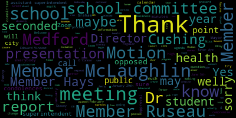
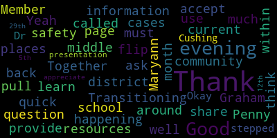
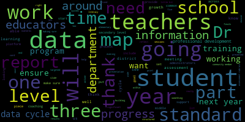

AI-generated transcript of 6.12.2023 Medford School Committee Regular Meeting
English | español | português | 中国人 | kreyol ayisyen | tiếng việt | ខ្មែរ | русский | عربي | 한국인
Back to all transcripts
[Lungo-Koehn]: 3, 3, 2, 5. Please enter meeting ID when prompted, 943-0862-2729. Member Ruseau, if you could call the roll.
[Edouard-Vincent]: Member Graham.
[Lungo-Koehn]: Here. Here.
[Ruseau]: Member Kreatz.
[Lungo-Koehn]: Here.
[Ruseau]: Member McLaughlin.
[Lungo-Koehn]: Here.
[Ruseau]: Member Mustone.
[Lungo-Koehn]: Here.
[Ruseau]: Member Ruseau, present. Mayor Lungo-Koehn.
[Lungo-Koehn]: Present. 7 present, 0 absent. Dr. Cushing, do we have any student reps on the call? Yep, they graduated, so congratulations to them. If we all may rise to salute the flag, please.
[SPEAKER_08]: I pledge allegiance to the flag of the United States of America and to the Republic for which it stands, one nation under God, indivisible, with liberty and justice for all.
[Lungo-Koehn]: We have the consent agenda, bills and payrolls, minutes from committee of the whole evaluation meeting on June 5th, 2023, minutes from the special meeting and public public budget hearing on June 5th, 2023, and minutes from the 10th regular school committee meeting, June 5th, 2023. Motion for approval by Member McLaughlin, seconded by Member Kreatz. All those in favor? All those opposed? Consent agenda is approved. We have reports of subcommittee minutes from evaluation subcommittee meeting on June 1st, 2023. Motion to approve. Motion for approval by Member Graham, seconded by Member McLaughlin, all those in favor? Aye. All those opposed? Motion passes. We have reports of the superintendent. First up is the updates and comments by Dr. Maurice Edouard Vincent, our superintendent.
[Burke]: Good evening.
[Edouard-Vincent]: I would be remiss if I did not discuss today's Pride Month contest incident at Medford High School. We were made aware that a teacher's decorations for the Pride Month contest were torn down. This type of incident will not be tolerated and has no place at Medford High School. I have spoken with Ms. Frances Nwaje, the city's Director of Diversity, Equity and Inclusion, as well as Chief Buckley, Chief of Police for Medford, to initiate investigations into this matter. It is painful to have to report this, but the Medford Public Schools, we pride ourselves in fostering a safe environment for all. Hate will not be tolerated here. A safe and supportive learning environment is what our Mustang community expects and deserves. We are here for all. If anyone needs support regarding this incident, please see one of our assistant principals or use the Say Something anonymous reporting system.
[Burke]: Together, we must learn to accept all and provide safety to all. Transitioning to share some information about what is happening within the district.
[Edouard-Vincent]: First, I would like to congratulate all of our graduates, the class of 2023. I wanna thank all of those who organized and worked hard for the ceremony that took place at Hormel Stadium and thanking all of our community partners for being there supporting us. Special thanks to our DPW for setting up the stage and chairs and Medford Police, Medford Fire Department, EMTs, the entire community for their support. The administration, the administrative team at the high school. Thank you for all your work. And thank you for the school committee for supporting that event, and your participation last week. I also wanna share that as the school year is quickly winding down, this being our last regular school committee meeting of the year prior to our summer break. And again, a future date will be set for us to meet briefly once all budgeting steps have been completed on or before June 30th. I also wanna share that there is going to continue to be much celebrating happening this week. Our fifth graders will be moving on up to middle school, and there are multiple ceremonies taking place this week, and you should have received communication from all of your school principals, but you can also look at last Friday's communication where all of our moving on ceremonies are listed. In addition to that, Andrews and McGlynn, their moving on ceremonies will be taking place this week on June 15th with the Andrews ceremony starting at 5pm and the McGlynn ceremony starting at 7pm and those ceremonies will be held at Hormel Stadium. Also, I just want to invite all eighth graders to a very, very special event that's going to be taking place tomorrow. The red carpet, yes, indeed, the Hollywood red carpet joint celebration is going to be held at Medford High School for all rising ninth graders. It's an opportunity for you to go to the high school, be treated like A celebrity. I want to thank the Andrews and the McGlynn PTOs for coordinating that effort, and it will be a fun time for all. Also this Wednesday, June 14. from six to 7.30 p.m. It will be Medford CPAC is hosting the general meeting and CPAC elections. So again, that is this Wednesday. Also, I want to share some summer programming summer school registration is now open summer school is not good news for some, but our students in grade six through 12. If you participating in summer school your parents have been notified as well. Registration is now open, and you need to go to the school's website in order to complete your registration for summer school. I also want to share that there are still openings for our summer camps and sports camps that are going to be held over the summer months. Again, you can refer back to my memo to get additional details. I want to share that. This Thursday, June 15th, the City of Medford will be hosting a Juneteenth celebration. Although Juneteenth is Monday, June 19th, which is a federal holiday, there will be no school. On Thursday at City Hall from three to five o'clock, the City of Medford will be hosting a Juneteenth celebration in collaboration with the Community Center and a raising of the flag, there will be music and guest speakers, all are welcome.
[Lungo-Koehn]: If I may, Superintendent, 3.30 to 4.30. 3.30 to 4.30, thank you. We'll put that in their calendar, yeah, 3.30 to 4.30.
[Edouard-Vincent]: 3.30 p.m.
[Lungo-Koehn]: to 4.30, so come out to City Hall during that time, thank you.
[Edouard-Vincent]: I also wanted to share that June is Caribbean American Heritage Month. And since 2006, the United States has officially officially celebrated the official achievements of people of Caribbean origin, who now live in the United States. And a few people who identify as Caribbean, which is a mix of cultures, languages and religions that create the diversity of America, Alexander Hamilton. The first Secretary of the Treasury, Colin Powell, the first person of color appointed as Secretary of State, Vice President Kamala Harris, and White House Press Secretary Karine Jean-Pierre, and Homeland Security Secretary Alejandro Mayorkas, and your superintendent as well. We all celebrate Caribbean, at least I do, Caribbean American Heritage Month, so happy June. I also want to share a special date if people can mark their calendars. This is July 14th at Hormel Stadium at 5 p.m. The Medford High School football program, they are planning their kickoff for the summer, and it's going to be the inaugural blue versus white foot off white flag football game. The Medford Police Department will take on the Medford Fire Department. This is a fundraiser for our team. Tickets will be $5, and there will be a concession stand and T-shirts for sale. All ages are welcome. Please mark your calendars and plan to attend this fun-filled event. Additionally, the 23-24 school year marks the 85th anniversary of Medford High School approving the Mustang as their mascot. So the Mustang was approved on November 24, 1938. So for further information, reach out to or email jcurley at medford.k12.ma.us. I would also like to just close by saying this Sunday is Father's Day. So, although President Wilson celebrated the first Father's Day in June of 1916. It wasn't made official until 1972, when President Nixon officially declared Father's Day would always be celebrated on the third Sunday in June. to all the fathers, grandfathers, uncles, and all other father figures. We appreciate your support and wish you a relaxing day surrounded by your family. So those are my announcements and have a good evening.
[Lungo-Koehn]: Thank you, Dr. Edward-Vinson. Second report, we have communities that care survey presentation by Director Marian O'Connor. director of Medford board of health, and then also penny finally, city of Medford prevention and outreach manager, Dr. Peter J. Cushing assistant superintendent Stacey Shulman director of behavioral health and counseling. Welcome everybody. Are you able to, Stacey and Mayor, Director O'Connor, are you able to hear Dr. Cushing with that microphone? I think she shook her head, yes.
[Peter Cushing]: Can you hear us now?
[Lungo-Koehn]: That's better.
[Peter Cushing]: All right, thank you. So as I said, and now said so that everybody can actually hear, Stacey Shulman and Director Marion O'Connor are on the Zoom. Here at the podium is Penny, who's been really instrumental, really huge help. We did the Communities to Care Survey in the fall of 2021. I really wanna applaud the Department of Health Because we made it a priority within the med for public schools to ensure that this survey was translated. And the Department of Health committed $6,000 to have it sent out and professionally translated. So that was a tremendous help for all of our students to make sure that every single student had access to this survey, at least when it comes to language translation as well. So I'll hand the microphone over to Penny.
[Funaiole]: Thank you very much. I do apologize. I'm at the end of a laryngitis situation. So bear with me. But so this communities care survey has been conducted every two years since 2005. So we've been doing this for a very long time monitoring our progress. And because of this, because of the data being collected in fall of 2021. and we are about to go around into our next round of data collection. I just want to remind everyone that this is a temperature-taking conversation and for us to really be keen on what we want to see for the next round. And I do apologize about the delay of seeing the results, but I think that it was a funky year anyway. It was December 2021. folks had just come back into schools and life was changed so drastically for so many. So it's really sort of a baseline, this data. And I have a lot of data that compares the year before to see if we were worse or better off the year before. But what you'll see is in some cases, we're much better off in this last taking. And in some cases, just a little bit of a difference. So I want to make sure that I do have a lot to show you. I will speak quickly. But obviously, you know, flag me if you want me to slow down or stop to talk about something. But it is the belief of our office in the health department that it's everyone's collective responsibility in the city of Medford to protect our young people against drugs, tobacco, vaping, alcohol, nicotine, the whole bit, right? So we really want to recruit everyone in to understanding we are all a part of this solution. It is not the school committees to make this change. It is the whole community to make this change. So when we think about this, we think about our individuals, self, thank you, our individuals, the individuals and their peers, that is a whole set of things that'll happen. We want to keep that in mind about how can we create interventions that are healthy and helpful. And then thinking about the same for our families, how do we support our families when our youth go home to those families? That's their main point of care and contact and education. So we wanna think about that as we're going forward in the city of Medford, that we're caring for the whole family, not just for the child. And we have really taken concerted effort over the last four years at the Medford Health Department to rework the way in which we are doing everything we're doing where we have a social worker on staff, we have a recovery coach position, we have outreach workers now that are community liaisons with multiple languages that they are able to go and access different communities. The tail end what I'm saying, but it's at a time that if a family away from falling deeper into whatever that might be. Stress is a main driver for substance use. So as you can see, this is my wheel. I like to keep my mind always thinking about this, that we're going to circle the problem in multiple ways. So if you go to the next slide. So what are we really trying to do? We're trying to identify trends and understand the current risk and protective factors and high risk behaviors. So these are a list of these risk and protective factors and what these risk factors might contribute to our substance use, misuse, teen pregnancy, delinquency, and violence. Okay, so, and with young people,
[McLaughlin]: There is always a chance, excuse me, sorry, Mayor. Point of information, Member McLaughlin, can we ask Mr. McLaughlin if he can get this monitor working on this side.
[Lungo-Koehn]: Yes, Mr. McLaughlin, just once, so take a pause. Technical issue. Maybe you could direct us, Penny, we have, I know you gave us a folder, so is there a copy of the slideshow in our packets as well.
[Funaiole]: I do apologize because I was working on it till the end and I did my printer stopped working. That said, No, there's a you gave us a ton of information.
[Lungo-Koehn]: So it's fine. It's fine. I just didn't know if we could follow along.
[Funaiole]: Okay, so the the point of prevention is to delay use right we know that alcohol is legal we know that nicotine and cannabis is also legal. Now, so we want to delay first he's doing all brains to develop before they get to the point of introducing addictive substances into their brain. So 90% of addictions start in the teenage years. And so that's what we're trying to do here. So the first administration, the survey is 2005 every two years, sixth through 12th grade. As I said, we administer this in December, 2021. This is the first time we administered an online survey. Usually it was paper copy with a scantron. We tried to cut down on some of the administrative tasks with that. We started the survey and Nick Tucci, our wonderful principal at the McGlynn School, he pointed out that there was some students who couldn't access this survey because of language. And so we stopped, and we pulled back, and I sent this out to be translated in four languages. And then I stopped, and I had another translation company verify that that was correct, because these are nuanced questions, and they have to be correct in their translation. I think these numbers that you're seeing in terms of who completed the surveys, these are low. And we wanna fix that for the next round. It does affect the data when there's not enough students taking the test. This isn't a sample survey kind of survey. This is a population health survey. So we wanna make sure that we get a better turnout the next year, but also reminding everyone, we had a lot of students that were hybrid, maybe a little bit, maybe students who weren't coming back to school, a lot of things that were going on for our community. So the validity of the survey, what our evaluator does is they look at the survey and they eliminate any surveys where a student exaggerates drugs or antisocial behavior, drug use or antisocial behavior. So it's overly exaggerated consistently, we see something's wrong with the survey and we go ahead and push it to the side. We eliminate surveys where students report use of a fictitious drug. I'm not gonna tell you what that is, because we don't wanna ruin the survey, right? And then finally, anything that's not logically consistent if you said, I drank 40 times in the last month and then you said another question that you never drank, that wouldn't work so we're going to eliminate those as well. As we're going through the survey, I want you to think about these, these four terms lifetime uses.
[Burke]: month, also called current use in some places or cases.
[Funaiole]: So that is the measure that is most critical, because anybody might do something once, but may not be affecting them as a longer term issue. So we want to track the 30 day. And of course, binge drinking behavior is a report of use of five or more drinks in one sitting within the last two weeks. And that's for everyone, just chill. So keep that in mind, folks. Binge drinking is often misconstrued for most people. Perception of harm measures attitude and perceptions related to substance use based on how much the person thinks the risk of harm to themselves physically or other ways. And this is a really critical concept, which we'll get into in a few minutes. Okay, so this serve this here is your sixth through eighth grade. These numbers are out of 100% scale. We did this on purpose I did these slides I have to give thanks to birth brought Bert Rothenbach who is been our evaluator for so many years and then from the Tufts interdisciplinary evaluation research team, they helped us put all this stuff together. And it was important to them for us to show 100% is all the kids. This is a very small amount of young people that are using substances in our community. And so that's what we want to keep in our mind. There are substances that are not being showed on this chart. And the reason why is because they were in a lower, they had a less than 1%, less than 3% that is showing across all the years that we've taken this survey. So we eliminated those. Those are prescription tranquilizers. heroin and stimulant use. And as you can see too, with our prescription pain relievers, we started out with higher numbers and now we have such low numbers. We could eliminate, but I don't think it's, I think we should still keep this as a top of our mind. So this is the eighth grade, sixth through eighth grade. This is the high school trends over time. So as a whole, I think all of us working together over my career of 15 years, I think we're doing a pretty darn good job in this community, helping to support our kids and our families. So the next slide is about alcohol use. That's the, yeah. So here I have a snapshot of trends across different years. So the middle school, you'll see the lifetime use and the 30-day use. These are pretty significant. And again, young people were isolated at home for a good part of time. And so this may be just because of safety of home. It may be other factors. It could be just, again, that we're doing a good job getting the message across. But I just wanna show these comparison. This next slide you'll see is by grade. Again, the last one here is the state, is the national average. And we are lower than the national average on all these numbers. And as young people grow, there's a more likelihood of taking riskier behaviors. But at the same time, these numbers are still pretty low. So I point this to this slide. This is 30 days. In the last 30 days, did you drive in a car with someone who had been drinking alcohol? Well, you might wonder why a sixth grader would say that well because parents drink and your kids notice when you're driving, and you've been drinking. And so we want to point this out that this is something that young people do know about as a matter of fact we did a much larger assessment of seven communities, and in focus groups you've said it's very hypocritical. that I see parents and adults drinking, and then we're told we're not going. So why is it safe for them and it's not safe for us. So there's so youth are really getting to this concept of like, wait a minute, something's not right here. So moving on to nicotine. So we are very concerned about vaping. I think everybody says that. And this is what we're seeing. We're seeing lower rates of vaping. And we believe that has something to do with access. So these products have become 21 plus. They have removed flavored products on our markets in this area. You can still get them in New Hampshire. You can still travel to get. can still find things on the internet, but access is important. If we can limit access, we can limit use to a degree. And then this is by grade and age. So as you can see, there's a little bit of a blip here. Our 10th graders are showing higher use than other grades on both the 30 day use and the lifetime use. So these 10th graders will be seniors next year. We'll see how this survey goes with them. But the 11th and the 12th graders in this survey, they have graduated or they have been gone. So we're not gonna pay attention to those particular age groups. And then because it's such an issue, we wanna look at chronic use as well. So if you've had six or more occasions that you used of your vaped nicotine in the last 30 days, this is what it looks like. The chronic users are qualified again by the six. But if you really look at this 10th grade at 40 plus occasions, that's daily use, that sounds to me like addiction, And then with those interventions, we need to think about vaping cessation. Unfortunately, there are not as many vaping cessation programs as there are tobacco cessation programs. So we may, you know, have to think about what are we going to do and how are we going to look at the research and how are we going to build programming that makes sense to Medford. We do have resources beyond Medford. We are a part of a regional collaborative. Oh, she stepped out for a second, but Sophie Greenbaum is our regional coordinator with Medford, Malden, Melrose Stoneham, Wakefield and Reading. So I want to really encourage you all to be looking out for those emails from the Mystic Valley Public Health Coalition, because a lot of our work, we have a good amount of money coming into this community, into those seven communities to support the work that we're doing on the local level. and to bring those seven communities together to really think about as a team, how can we in this region make a whole culture change? Okay. So moving on to marijuana. So the survey calls it marijuana. I think that the right thing to do would be calling it cannabis going forward. But again, the survey calls it marijuana, so I'm sticking with the naming convention of the survey. So we're looking at this and we're seeing that lifetime and 30-day use, both middle school and high school, that we're faring better than we did the year before, or the previous administrations of the survey. And that, yeah, we're just gonna keep monitoring this information. And then the same here for the by grade. We'll keep monitoring it. And we are lower than the national 12th grade average there. So the last piece, well, not the last piece on this, but this piece is that we really, are they vaping nicotine? Are they vaping marijuana or cannabis products, right? And some of the key, I apologize, but I have to. To my role I think is that, that the the vaping materials that are being sold into centuries they're being monitored they're being carefully checked by the state of Massachusetts, there's a level of monitoring that, but there's still illicit vaping products that have cannabis in them that are, and they are dangerous. And you may remember back a couple of years ago, there was some lung issues that were going on. So we really want to talk to our young people. Vaping is, you are putting oil into your lungs over and over and over again. It's very damaging to your lungs. So we'll keep on watching this and we'll keep on thinking of our education that we're going to do with that. So this slide here is just to remind you that perceptions mean a lot. While we know what facts might be, perceptions mean so much because it becomes reality for individuals. So it is our jobs to dispel these perceptions, to really change it from, this is the truth, right? And get them to understand the reality and the truth. So that's why we pay attention to these perceptions of harm. So in the next slide, I have, this is my concern, I think is important to point out. So perception of harm as it relates to marijuana use. When you look at all of the people who reported lifetime use, we have 37.8% of those users ever have used it. So there's no risk. That's a problem. And same thing with all of our substances. So, I have this data that shows you know we can show it 30 different ways, but I really want to point out that it is important that we are both thinking about preventing substance use. But also understanding when people use substances, how do we help them. And some of the ways that we need to help people is to get them to be contemplating about their behavior change. If they feel there is no risk, what is the point of contemplating change. So I just want to keep that in mind as we are moving forward in this world. It is not abstinence only, because that's not what we're saying we're talking about people who are active substance users with active active opioid users, we're talking about harm reduction, how do we keep you healthy, while you're making your own journey into change. So we have to also be considering that for young people who are using substances as well. And then the next slide is to show the chronic use again. And again, these numbers are very small, but just something to keep an eye on is that those folks who are chronically using, they need a different set of interventions than those in the universal population to prevent. Okay. And then driving while in a car. I mean, again, these, these 12th graders in this survey have been gone for a year now, but this is a lot of, um, a lot to say about 15.5% that are moving around in vehicles while someone's under the influence of marijuana. So I just want to keep pointing that out. Let's be safe in our, in our world. Okay. Okay, so we're moving on to mental health-related issues. So the city of Medford, we use the Communities Care Survey. We've been using this for, again, 15 years. This survey asks depressive symptom measures. These are the precursors to major depression. There's a lot of research. There's some research, actually, I don't wanna overstate it, but there is research that specifically takes this survey and it measures it against other depressive symptom measures that we use in our doctor's offices. and it's absolutely comparable and it does correlate with long-term mental health issues. So that's why we keep track of that. When we're talking about mental health issues in our young people right now, we're not just talking about depression, right? We're talking about anxiety. This survey doesn't ask anxiety questions. As a matter of fact, I don't know that there is a set of anxiety questions for young people yet. I'm going to look into that and keep that at the forefront of my mind here. But what we're seeing is these numbers look pretty, you know, sometimes I think that life is not worth it. 49% of young people said that's definitely not true, right? And this is the middle school grades. So as you go through all of these measures and you think about it, I've coupled these together, the definitely true and the mostly true to say these folks might, We might really want to think about what we're going to do about this right, so I just want to show, though, the next slide in that, but what we're seeing is there's not much of a difference from pre pandemic to now. So what we saw was this was happening before the pandemic and it's been exacerbated by the pandemic so. We have to really continue to think as a whole, how are we going to support our young people in their mental health? And we have some information about that as we get further down. And then this is the high school. And then the next slide shows the overtime. And we do have a bump up here on one of the questions, but it's not so significant. And that's the researchers did a lot of significance testing as well. So, you know, but in the past year, have you felt depressed or sad most days, even if you feel okay sometimes? So that's actually a middle of the ground question, I think. Not as extreme as sometimes I think life is not worth it at all. So of course, more students are going to report this question. So bullying experiences. Very few students experience any bullying of any type. Very few students experienced bullying of any type and said that it was a whole lot, right? But many students didn't experience bullying. And it's also important to note the question doesn't ask specifically about being in school or about school-based bullying. It just says bullying in general. So this could be online, this could be in the playground, this could be at home in the neighborhood, so on and so forth. So just keeping that in mind. But again, what are their perceptions? And what are we talking about when we're talking about bullying? What do they think bullying means to them, right? And how do we examine that a little bit more? So I want to skim through this just to say not much of a change going into high school. And of course, and as we're seeing in both grade sets, that verbal bullying is higher. It's a little easier to do, right? Because words happen quick and they are mean. So again, I wanna continue to monitor this. I wanna think about solutions or think about opportunities for us to continue to enhance programming and so on in our school system. And again, the data shows that it's not, it's gone down actually in the high school. Sorry, go ahead. Member Ruseau.
[Ruseau]: Thank you, Penny. I'm on the bullying stuff, how does that compare to the national averages.
[Funaiole]: I don't know. Okay, I guess if I did, I don't have it in front of me. Okay, I can find out and I will be useful.
[Ruseau]: Thank you.
[Funaiole]: Yeah, definitely. And I also just want to say to. That, again, I apologize if I'm so skimming over this it is a lot of content. But yeah, I think that, how do we compare to the national average. I also want to give the for for cast here is that my peers are seeing these numbers jump drastically in the administration of this spring serve youth at risk survey right. So they saw a lot of numbers go up in a multitude of communities that surround us. We will see these numbers go up across the board. But I think it's important to note that we've worked really hard over the last number of years to continue to look at our programming. And I'm just so proud sometimes to hear of the things that you're looking at and thinking about and the language that you're using around supportive communities. So I just want to give you all a shout out on that too as well. So this is a list of questions. I am not going to read this out to you. And anyone who is watching this presentation who wants this information, you can definitely contact me. That's pbruce at medford-ma.gov. I will send you all these results. But the idea, though, that adults being supportive is really important, right? That young people have someone that they can turn to if they don't feel like they have anyone else. And so we want to think about what are they, what do they perceive? How are they reaching out? And in some cases, right, where the question might go, I can talk to an adult at school about personal problem or something important. Well, in some cases, maybe they've been told not to talk to someone at school. So how is the school looking to their community partners to be that other resource? How do we get more community-led, youth-driven activities so that it's a balance and it doesn't have to all be on the onus of school teachers, school professionals? But that said, I would like to sit down with some young people and ask them in a deeper level, what do you think this question means? So we can understand what their perceptions are around this question as well. And then this is the measure against the previous year. And I will just show the next slide just to point it out as well for the high school. And again, I'd like to think about how we can set up measures to continue to grow and to build this opportunity. So the next set of data is on opportunities for pro-social involvement. And it is really the philosophy of the prevention field that positive youth development and that empowerment, right, is a really critical skill build for a young person to make decisions for themselves, by themselves, that are thoughtful and helpful to themselves. So we want to find ways to get youth more involved in decision-making, even at the middle school level, even at the elementary school level, is figuring out how exactly can you include youth to make a decision and I've had conversations we've had trainings for our club club leaders and our school coaches here in Medford and, and I've, and we had a whole activity on this and and someone said you know they put them on a line where, how much do you think a young person can make a decision about going to the a trip to New York, and there were a lot of people who were like, none, they can make no decision. And some people were like, no, I think they can make, young people can make decisions, you just need to figure out how to carve out decisions that make sense and have boundaries, explain boundaries. So I just am putting this slide up so that we can continue to remind ourselves that we need to recruit young people into solutions, and not enact solutions on them as the only response. And then the next slide, right, again, shows the high school, and then the next slide's gonna show rewards. Rewards are important because you need a feedback loop. We all need a feedback loop. Am I doing a good job? Should I keep reinforcing this good job that I'm doing, or should I give up? So it's really important that we reflect back to young people, that we talk to parents, and that we're communicating with those families so the family can reinforce those behaviors and those positive things. I'll just cruise through to the next set of slides. And I'm going to skip over that one. So then, this was one that Peter really pulled, wanted us to pull in and it was almost like he was forecasting the future. Because our surgeon general has now come out with a report to discuss social media and the effects on young people. So how much. So these measures are all based on four hours or more in these activities. So this is for middle school. The next one is for high school.
[Peter Cushing]: And just if you're not aware, but it was about two to three weeks ago, the Surgeon General came out and it's widely believed in the Surgeon General references that if you're engaging in social media over three and a half hours a day, you're significantly more likely to have anxiety or depressive behaviors. And so this is interesting because if you talk to school leaders, we kind of could have told you this, and it's really important that schools and the community understand the deleterious effects that cell phones and social media devices can have on our youth and how critical it is that families, in my perspective in all the years of doing this, think of something like the pledge until eighth, which is wait until eighth grade to give your child a device, or that you're significantly restricting their access to these social media platforms that cause our kids significant harm as is now being recognized. So we wanted to really start getting this data. Remember this is back in the fall of 2021 and wanted to really start looking at what our kids are doing in their device time.
[Burke]: Member Graham, can I just ask a quick question? Can you flip back to the middle school page?
[Graham]: Interesting. I was surprised to see the percentages higher in the middle school population than the high school population. Is that typical in communities or are we an outlier there?
[Funaiole]: So I've never seen this question measured against other communities. So that would be important to know, but I can go. I know that these question sets coming from Burp Rothenbach, he has used this in Florida and other states. So I can come back to him and ask him to give us a sort of sense of where we fare on that. But also note that in these two data sets, that they shift. So it's actually by the most, the highest percentage. So the surfing the internet and the using social media flip middle school to high school. So I just want to make sure that that was visually aware. Did I answer your question?
[Burke]: Yeah, thank you.
[Funaiole]: Okay, and then just keeping an eye on activities that young people are are involved in. This is so cool to 53% of these middle school students said they had school clubs to attend to, you know that in the middle school we're showing in 2000 and I think 11 I came up here there was nothing for middle school kids, and you know, Paul DeLeva and the other principals at the time, they jumped in to actually put clubs together at the middle school level. And we saw drastic changes in our data, just not one simple act. So I really wanna encourage that we keep thinking about activities that are engaging, maybe that are decided by young people, which they do anyway. I know you guys all do that at the school system. But also we in the community level are gonna start drawing a network together. We really want to see people who work with young people outside of school time interfacing, sharing ideas, collaborating, and they themselves not feeling isolated in coming up with what's next and what's going on. So we will have an event on June 22. It's a luncheon for anyone who works with youth and we're going to start creating that resource sharing opportunity. but then in the high school, we see that, you know, jobs come up to play, right? A lot of kids, a lot of young people are not only working for themselves, they're working for their family. And so we also need to be inclusive in thinking about job training, job opportunities in the community. There's a lot of different creative ways that we can look at this and I'll be tapping on the mayor's door about my ideas soon. So yeah. All right, so what are we doing? This is all the stuff that we got going. And so we, again, we have laws that we've put in place, state laws and local regulations. We have a youth mental health first aid programming that's starting to roll out. We are rolling that out in a multilingual outreach. So it is not widely being published as of yet. We are going to be hosting courses coming up that'll be more wide to the community. But right now we're recruiting folks from our Arabic speaking, Haitian Creole speaking, and Spanish speaking and Brazilian Portuguese speaking communities to come and to start participating in that. We're also working on a multilingual campaign to recruit people to get help for behavioral health on the level, the city of establish a promote prevent support Behavioral Health Commission, and we are working through an assessment right now.
[Burke]: and to pull resources into this community around that.
[Funaiole]: And it's for the whole community, not just for young people, but it's about mental health. So we have our, again, I just mentioned that youth worker event, we are working on reviving our compliance checks, again, limiting access, compliance checks to cannabis facilities are being done at the state level, not at the local level, but we'll be looking at that as well. How can we continue to reinforce and support that you know, diversion, they're very, very, very strict when you go to these cannabis dispensaries. It's the diversion after the fact that I'm concerned about. We have training for our police. So we are always working with our police department, we are always helping them update training and what's going on. I just spoke about our community liaison team, our multilingual team that does outreach. And we do against our social worker does a lot of support for low resource families, Medford connects is an initiative started in the city of Medford here to bring all of our departments together, and the school department. is shifting into that support into that realm. But you know, we have a software that we've hired, purchased called Unitas, that any nonprofit can pull into and provide services. So I can go in and I can click off five different company services to get one person out. That is an incredible service that we are looking to expand, really encourage anyone who's listening to think about that or To ask us questions about that we'll think it's as good as our network though that's important part parent education so where we just worked with my family network, think about how they're recruiting out to different groups into families and what are their programming and how do they want to get it out in this. Century and how are we helping them streamline their work. It's been an excellent opportunity. And then again, we have the library, the rec department, the Council on Aging, a multitude of departments are having access to five community language connectors. They'll be working on behalf of those departments doing outreach, just like we have our community liaisons. and the health department, they all have these connectors to go out and to do the recruitment engagement to different activities in our city, specifically the library, a resource. Oh, our library is incredible. Good to the library folks. And then our regional work, we have our seven communities. We just went around and discussed all of the data that we learned. We are working on a strategic plan at a regional level and we will be starting networking groups within school systems as well and we'll be thinking about how to do that and we're hoping that the school system will also support the initiatives that we're trying to roll out through that grant. And the next slide, I am not going to speak to this only and to say that I think one of the most critical learning moments that I've had in my career was when I just learned, what is it, five, six years ago about multi-tiered systems of support, which the schools know about, right? But that is prevention. Your tier one is everybody gets this, right? So that's health promotion. Everybody gets health promotion. Everybody gets good messages and opportunities. And tier two is that intervention space. People are starting to show risk. and how do we specifically focus programs that help us intervene at that risk level? And then in our tier three, how do we help people who need help? And what are the programs that look like there? And as you can see, you have a plethora of things going on in each of those levels, but I implore everyone to think about what else we should be doing and what is the most effective time, both efficient and effective, what are we doing, right? And how can we continue to improve? We're not starting anything in the city of Medford right we aren't starting a product prevention initiatives were sustaining and we're enhancing and we're becoming innovative and the state knows it. multiple departments in the state look to Medford as innovators. So I just want to make sure that we keep doing that because it's fun. So short term goals for our community care survey, continued work within our promote, prevent, support Behavioral Health Commission, Mystic Valley Public Health Coalition is that acronym, that's the strategic planning we're talking about. We have opioid settlement funds that are coming Well, they are here, we have some that are here, but we have a process we have to walk through, working with the community, getting feedback from the community. I have assessments going on, and we're gonna be pulling all that data together, bringing it to the Behavioral Health Commission to discuss the breakdown of what do we wanna do with this money and how we wanna relegate different projects. We wanna do more education for parents, especially for parents who have families nine and over, because we know Marie Cassidy is a gold star example of parent education for zero to eight. And we wanna continue creating those networks for youth in different ways to do that. Okay, I'm trying to hurry up. We have a comprehensive 30 improvements that are coming to the school. We're looking at environmental sensors in the bathroom for monitoring vaping. And I wanna say that the heat cap process that I know Rachel is gonna get up here and talk about, we believe in my office that that's a model and we're gonna be asking all of our regional partners to look at doing that as well in their own communities. So again, innovation, bringing it to the forefront, keeping process is a part of progress. Thank you for allowing me to present.
[Burke]: Thank you so much, Penny.
[Graham]: Yes, sure. Member Graham, then Member McLaughlin. My question will be pretty quick. Actually, it's just a comment. Can we make sure that when we hire a new communications director, that he or she receives this presentation. I thought there were some really interesting points on some of the slides about the school to home connection or lack of, and I think that's important information for our communications director to have.
[Lungo-Koehn]: Great, yes, absolutely. Dr. Edouard-Vincent and member McLaughlin.
[Edouard-Vincent]: I just was going to ask when you showed the three tiers of support because I know we have director O'Connor and director showman, I didn't know. I didn't know that that was your second to last slide. So I was going to ask if Stacey showman wanted to just say something regarding that particular slide, Dr. Cushing if you could show that one but I don't know. Remember, so if your question was about that or is it okay for.
[Lungo-Koehn]: Member McLaughlin.
[McLaughlin]: Thank you. Thank you for this information. It's a lot. And I know it's a lot of work and I especially like the comparison data and I didn't realize I was a data nerd until I went to grad school and now I'm a total data nerd. So I love it. Thank you. And I am really excited about the possibilities as you talk about how you folks are looking at how to improve, you know, what to do next, how to involve community folks interested in the community liaisons and how those have been sort of determined. So that's one question. And do you want me to do question by question or?
[Funaiole]: Yeah, yeah. So the community liaisons, in terms of determined, like what populations we're reaching out to,
[McLaughlin]: for both what populations are reaching out to and how did you find how did you determine who the community liaison is, and and or do they have training as well.
[Funaiole]: So we have been fortunate enough to be going through this really incredible work with the Office of Environmental Affairs around climate change. And they're very interested in equity and really interested in thinking about that. And what it really is is about a sense of belonging in your community. That's how you're going to be through COVID. So we listened to our community, we did an assessment, and then we determined that we really needed to have community champions. So we hired five community liaisons. And at the time, 2020, when we started this initiative, it was really based on the census of the schools and the work that we've been doing with the school system of the top four languages. So the community liaisons were the Arabic-speaking, Spanish-speaking, Haitian Creole, speaking and Brazilian Portuguese speaking, but also a representative of the English speaking BIPOC community. So we spent a year and a half working with that team to really start up a Haitian task force, an Arabic task force, and Arabic speaking task force. And so we worked with them. And then the other folks, they were really just trying to get some traction and get some Figuring out what's going on, what do people need and with that model we we just were elated by it, they were elated by it, and it was such rich feedback that we were getting that I believe that we. We actually doubled down and we asked the mayor to help us get these positions through ARPA. We also asked the same funder to give us positions as well. And both of them gave us those opportunities. So with our ARPA funds, we were able to really dig in deeper and to really think about this position as a community health worker for the city of Medford. So now of our five community liaisons, three are trained community health workers, two are on their way. We have just signed up to become a a mass health application organization. So every one of them is getting certified, including our social workers. And then we're going to be working with the Metro Family Network and other parts within the community. to then have them be application advisors. So right now, one of our community liaisons, if you didn't notice, I got our lid up, because I am so obsessed with the work that they're doing. They're so incredible. Maralea, she came to us as a Councilor. So she's already gotten, I think, like 10 to 15 individuals who speak Brazilian Portuguese Mass Health in the last two months. And she's been with us for about four months. So she's a go-getter. So there's that. And then we are also working on a kiosk from the Department of Transitional Assistance to be located at the library. And really, all of this is centered around the idea of a resiliency hub, that you have a trusted place within this community that you'll arrive to, and there'll be people there who can talk to you and speak with you and communicate with you. So one thing that we are not doing is we are not setting ourselves up for things we cannot cash in on. So we don't tell people we're going to do this in another language when we don't have the resources to translate that language. So I just want to add one more point to this because I know I'm taking a long time. But then with the other request we had, we did get that. That's our Redbird connectors. And so this is a massive project for another day. I'll tell you all about it. But we have five language access folks that we actually went ahead and we hired. It's actually more languages. We had an Asian language access connector, and she is able to speak three Asian languages, Mandarin, Cantonese, and Vietnamese. So we've expanded our reach there, and that's definitely a necessary population that we have to start doing. We're seeing the populations rise here and there. But, you know, we just have a lights out team on both ends, and we have a few more positions to fill.
[Lungo-Koehn]: Thank you. That's super. Just to answer that as well. We do do the full application process so everything gets posted on the city website and on better teams, so that everybody has access to apply for these positions and we do try to take obviously Medford residents it's working out well.
[McLaughlin]: that thank you that is super interesting information to me and I think one you know something that the that the city should really be celebrating it's great to know I think we've talked about. increasing family engagement at the school levels. And, you know, really the cultural broker model is a really important model and something I'm doing in my own work during the day. I'm actually becoming a certified application Councilor. Yeah, yeah. So I totally understand that process. And I think that's super important. And I, and especially with the redetermination right now, as you know, and do a lot of work with DPH, Maternal and Child Health Bureau. Yeah, so with that, I work a lot with the Division of Children, Youth, and Special Healthcare Needs. So that is one of the populations that I really wanted to ask you about here, especially in terms of when we're talking cultural brokers, we're talking that that's a culture in itself as well. And so where and how are we reaching that community, particular around, you know, there's lots of issues of public health that are intersecting for families and children with youth and children with youth with special healthcare needs. So I didn't sort of see that as a subgroup, and I'm really eager to move that forward as I'm sure you know as well, and happy to help any way I can, but I'd like to know what you guys are doing in that realm.
[Funaiole]: Well, so first of all, I appreciate your offer for help because I think it's really important that we always come in as a team to make this through. So right now, what we're doing is we have a brand new public health nurse, and we are working on trying to figure out by drawing in the three local hospitals to start a committee and start thinking about health care, chronic health, other health issues. So we're like moving and trying to grow into expanding what we're doing and how we're doing it.
[McLaughlin]: Yeah. And I guess I'm asking that in the DEI realm as well. So not just about, you know, chronic health care needs, but really about, you know, the connect program and other things that you were talking about, specifically some of the parent ed and some of the things that you're talking about with MFN. So these are all things that I think are really important to target that community, just as we are with language access and culture access and other communities. So again, happy to move that forward, but just want to put that out there and put that out there publicly, because I think all too often it's a community that gets dropped off and there's lots of intersectionality. There's people who speak other languages that also have disabilities, of course, and that just complicates issues even more. So again, I feel like I'm always clanging this bell and it does get a little tiresome, I'm sure. It does for me, certainly, but I think it's something that's really important and I wanna make sure that we're moving that forward. So love everything that's happening here and I'm eager to talk more.
[Funaiole]: Yeah, I definitely wanna talk to you more. And I also just wanna give something to Sophie Antoine, who was our health inspector. She's moved into the health equity coordinator role and leading that team and she is, she is at the top of her game. So, I'm sure she's going to listen and be like, I got five ideas. We'll be in touch.
[Lungo-Koehn]: Thank you. Um from the chair, if I may, I just want to thank you, Penny and Doctor Cushing for working with Penny as well as Stacey Shulman who I know is on the call. Um collaboration is is going to only benefit not only our youth but the entire city. So, I hope that we do get another presentation right when the 2023 survey is completed and the data is analyzed so that we can have a better understanding of where we're at. But the work that you and the team and under our health director, Marianne O'Connor, who's also on the call, have done, we're making progress and we need to make more, obviously more progress, because we all know what our children are going through. So thank you. I know that the schools have a seat at the table at the behavioral health meetings. That was set up about a year ago and it's it's moving along so anything I can do as mayor and I know the school committee probably feels the same way. We want to continue this work and make sure that everybody collaborates and works together, just for the benefit of our students.
[Ruseau]: Thank you. I have two questions. The first question is, I just, just a clarification. I mean, your work is for the city of Medford. So, you also work with non Medford public school students, correct?
[Funaiole]: Yes.
[Ruseau]: Okay, good. I just want to make that clear. The survey data though is just a public schools, because you don't really have access to survey.
[Funaiole]: Yeah, so, so we've we've spent many a year trying to look at this at the regional level of how to continue to work with our charter parochial and our private schools. It is a little bit harder to get in there and to do that. But it is definitely a part of our want and I meet our need. And I think it's really important right this is a whole community effort. And the ease of access we get because of the collaboration with the school system is fantastic. But I think as a whole, the school community and the health department, maybe we can continue to think about how we recruit in those other schools that are serving Medford residents.
[Ruseau]: Thank you. And then my second question is actually for Ms. Schulman about how does this actually look in the public schools?
[Lungo-Koehn]: Sure, so I'm happy to answer your question which part specifically.
[Ruseau]: Well, I don't know if I can answer that question. Just ask me a question.
[North]: How does the survey look, how do the services look, how does
[Edouard-Vincent]: Could you give an overview of just what are the services, the schools are currently providing for our students to, especially with all of this data, what is available for students that may have difficulty with vaping or alcohol or depressive symptoms, just so that the community can have an idea of what it is we are currently doing. whether you use the tiered, the multi-tiered system of support, or you just kind of see some of the key areas that the district, how the district is supporting students?
[Schulman]: So all students have programming related to substances through their health and wellness classes at middle school and high school. I'll let Director Perry talk about that, as well as additional screening for substances through SBIRT. And then we provide focused tiered support related to that survey. We also support students through social emotional learning strategies within the classroom, within counseling sessions, group sessions. So the tiered model that I showed shows a variety of supports for tier one students, meaning all students have access to those. And then tier two is more of a group support once we've identified a need. And tier three is more of those individual focused. So specifically at the high school, we refer out our students to an I Decide program, which is a collaboration with MGH. Those are specifically for students who might come to an assistant principal or a Councilor and have identified a need for substance use. That's just a really brief overall. There's a lot of supports that we offer in the schools right now. Obviously, we're continuing to collaborate with community providers and always strive to do better.
[Lungo-Koehn]: Thank you very much.
[Burke]: Thank you. Thank you, Maryann as well.
[Lungo-Koehn]: We have report on NWEA MAP end of year testing in literacy and math for school year 2022-2023. Ms. Suzanne Galusi, assistant superintendent. evening. Miss Miss Lucy and team. Sorry.
[SPEAKER_08]: Good evening. Good evening. Good evening.
[Burke]: Good evening.
[Edouard-Vincent]: Green light to chill on the microphone. Yeah, it's on. You should be fine.
[Lungo-Koehn]: We'll just go.
[Galusi]: Yes. Okay. Yeah, good evening. I'm going to just introduce the team. We're all here to present on the map assessment reports for this current school year. And to get us started, I'm going to introduce Dr. Bernadette Riccidelli.
[Ricciardelli]: evening everyone. Dr. Cushing, do we have the presentation that can be put up? That would be great. Okay, so this was a team effort. I'm going to just tell you that we didn't have a lot of time to turn this around. The MAP scores closed last week. I believe it was Wednesday of last week. The scores were available for us to analyze beginning Thursday night and then Friday into the weekend, and today we were involved in analyzing these scores. So I just want to go over the agenda, so if you can just go to the next slide. So what we're going to cover tonight, just some map growth reminders about the general setup of the test. We're going to go over the Metropolitan Public Schools 22-23 growth data in mathematics, in reading, in science, technology, and engineering. So for the departments, we have Ms. Faiza Khan for math, we have Dr. Nicole Chiesa for reading, and Mr. Rocco Sieri for the science, technology, and engineering. We're gonna go over the data cycles that in some respects we have done already, but we also have some future goals. So the projected data goals and the district-wide data cycles will be covered by Ms. Suzanne Galusi. And then lastly, available to the committee and anyone else who wants to see it, are lists of data, school-based map growth data specifically. So I just want to give you just some reminders, so reflecting back to the fall when we did a full presentation. OK, we went over MAP growth. If you remember, MAP stands for measured academic progress. So these tests that are given three times a year in the fall, winter, and spring are measures of what students know, regardless of their age or their grade level. and it measures their growth over time. So that's a significant part of this. Where is the growth and where specifically is it? And how much did they grow? It's important to understand that the test is adaptive. So that means that the question complexity is determined by right or wrong answers. The student is taking the test and they answer a question correctly. The next question is more difficult and it progresses in that way. It's important to know that this is only one data point that helps to inform decisions regarding instructional practices and student support. So a little bit later in the presentation, Ms. Galussi is gonna go over data triangulation. So keeping in mind, it's only one measure, an important formative assessment measure. The scores are based on RIT scores, which is a statistical formula that equates the scores in even intervals. And this test assesses achievement, so there is a way to get achievement information, growth, as we said, and through their linking studies that NWEA map has created, it can predict success on state assessments and college readiness. All right, so at this point, we're gonna delve into the subject-specific data, and I will turn it over to Ms. Faisal Khan for mathematics.
[Khan]: Thank you, Dr. Cadelli. Thank you. So the graph that you see here shows you the projected growth versus the growth that happened here in Medford Public Schools in the classrooms. You can see the progression on this chart, starting from pre-K all the way to 10th, although the test is from kindergarten through 10th grade, so that's what you see. on the chart, you see that we are missing the mark on grade five and grade six. And then as the subsequent slides, we'll probably talk more about that missing the mark and where we are meeting the mark and where we are exceeding the expectations. Next slide is, there you go. So there it's laid out, grade K through grade 10. We did, we met the 40% growth mark in all these grades, but in grade one, Students demonstrated the most significant growth, as, as you can see, and on in grade five, though we were not able to meet the 40%. We were only able to get to 35% so we missed it by about 5% the growth target. Next slide is, this is a more detailed slide. You see the same numbers in the right most column that you just saw on the slide before. What we can see is that K through four grades have exceeded the national spring mean rate, district spring mean rate in grades K through four. On this slide, we see more growth than we see nationally. In grade five, we see that we came very close. We were 217.7, and the national was 218.75. But we do see that 35% that I pointed to in the earlier slide, as in we missed the mark of 40% growth. Next slide is six through 10, that's our secondary grades. And we see that in grade six and seven, we are also trailing a little behind in our spring mean rate as compared to the national rate. But then we are on par in grade eight and become very, very close. in grade nine, then we miss it again, but being very close in our grade 10. That pretty much summarizes how we did in math, grades K through 10. And I will pass it to Dr. Chiesa now. So here we go.
[Burke]: Thank you. Good evening.
[Chiesa]: Can you hear me okay? Okay. Moving on to English language arts when we look at the next slide, which is the diamond and the bar graph. Here we go. We see that some grades have met or exceeded their growth. Some grades have not met or exceeded their growth. Some have fallen behind. The percentage of students who did hit the target will be on the next page as we move on. So Dr. Cushing, thank you. What we see is we see that in K1, 2, 3, 4, 5, 7, and 8, we have 40, percent or higher 43% or higher hitting achieving growth of hitting above that mark. We have grade one whereas the committee knows we've done quite a lot of work. We have grade one demonstrating the most significant reading growth with 71% of the district's first graders meeting or exceeding their specific growth target. And then we see grade six, nine, and 10, they fall below the 40%. Grade six had a 30% meeting the target, 37% grade nine, 30% grade 10. On the next slide, you're going to have more detailed information comparing how did we do in the fall with our mean RIT compared to the spring compared to the national overall. And that national spring RIT, just to be clear, that is a number that is determined by map growth, and it's done over a course of several years. So that national spring RIT is actually a 2020, That's the latest they have for their national spring writ prior to coven so I just feel like it's important to mention that when I spoke with them, they are they are not releasing a new writ next year. They are looking to release a new writ hopefully in two years, just so you know, for comparison sake. As you look through this slide, you will see a few things. You will see that overall elementary had a strong percentage of district students meeting growth and that they did exceed that national spring rate and they had growth each year. The last slide for me, and it says reading at the top, because I think it's important to note that this is assessing reading, the reading strand of ELA. So this is not a writing test. This is pure reading. This isn't the speaking and listening or writing, just the reading. And we see that the secondary level we did have some struggles. So grade seven and eight, the percentage of district students did meet growth at a 46 and 44%, respectively. Grade six, nine, and 10, they struggled in terms of meeting their growth at 31, 37, and 30. A few things that we now need to do with the data, which I know Ms. Galussi and Dr. Riccadeli will get into, we need to look at when this test was given. In terms of thinking about test stamina, I think it's secondary. There are definitely some significant needs here. And we also need to look at how our literacy interventionists are being used at the middle school. And they will, they'll take this data and this will be one of the components for the students that they are servicing as well, since they are explicitly reading. And as the committee knows, English has several other strands to work with as well. I am now going to turn it over to Mr. Cieri.
[Rocco Cieri]: Good evening, everyone. You'll see that the report perhaps mirror subject to subject so that there's a bit of ease of understanding what you're looking at. The bar graph records the writ growth, and the diamond is the projected grade level growth. And you can see that at grade four and five, kids are very close. At grades three and six, they're a bit off the mark compared to growth. They did grow, but not as much as we might anticipate. We do not give tests in grades K1 and 2 for science. And at grades 8, 9, and 10, we give the test twice, but it's given in the fall and in the winter. So the next slide, you'll see the RIT scores from the fall and the winter for grades 8, 9, and 10. Actually, in the following slide, you'll see the scores in the fall and the winter. And this chart or this table is a bit more, it's a lot of numbers. but it repeats the same information that was shared for mathematics and reading. The district score in the fall, you can see that growth occurs in the spring for grades three, four, five, six, and seven. And then the third column of data compares it to the national school mean rate for the spring. for those grades, and then to the winter for grades 8, 9, and 10. So I tried to preserve that measure so you could see the exact number of weeks of instruction directly. And even there in grades 8, 9, and 10, you still see growth overall for our students from one from the fall to the winter, and you see it exceed the national school mean rate score. However, we don't have any data that allows us to see the year-long trend. And just as a reminder, that MCAS in science is given in grade eight. Well, it's given in grade five. It's given in grade eight. eat the expectations in grade nine. So we didn't want to have a lot of interaction between the two tests at the same time for students. And we also wanted teachers to anticipate some of the needs of the students in the winter when that exam was given to lead up to the exam in the spring, the MCAS exam in the spring. Like it was said, there is some correlation, it's not an exact match, but it gives us some information about what can be possible to support the learners in class for the students. At this point, I'm gonna pause my part of the presentation and we're gonna move to a more global perspective on it.
[Galusi]: Thank you. So we're going to just shift a little bit to talk about data and what we're doing with it. And you've seen this image before. It's been in our slide deck when we've presented to this body about the NWEA map assessment results. But I do want to just pause for a second just to kind of, yes, we punctuate that this is one data set because it is. And part of triangulating data is taking all the pieces of data that we have at our fingertips. But I also wanted to say that the essence of the MAP assessment is information for the teachers. It's information for the teachers that are going to give them the instructional level and capabilities of their students. That's why when we presented in the fall and we went through all of the different reports that MAP offers for teachers to use as a means to compare to state standards and understand the standards in which the students are achieving, the standards in which the students are excelling, and the standards in which the students need a little bit more intervention. It also helps it gives resources for teachers, so that they can group their students and provide that specific tailored support that students need it's. not necessarily the vehicle we've provided, you know, for community-wide presentations. It's really meant to provide teachers with that information when they're working with students. The information we've given you this evening are the pieces of that global information in relative for how we are as a district overall? Are we meeting our growth? Where are those projections and how we are in comparison to the national standards? So if we go to the next slide, we have some goals for what we're doing with our data. So this is a work in progress. So right now, clearly, the wonderful and experienced crew that I have here with me, they've been working with data within their departments and map growth with the teachers in their departments extensively in their department level meetings. The work that we have to do as a district is making sure that we have set up systems and structures around data, and who's a part of those cycles, and making sure that teachers are using data to inform their instruction. It's been happening in pockets around Medford. It hasn't been structured. So we need to create that system, and that's part of what we're going to be building here as we go. And this will be for K to 12. So, the, this is our kind of three year plan that we've just wanted to put a lot of the work that we have in this next year one reflects next year, 2324. And so a lot of this work is ongoing, we just need to keep continuing and finalize. So we've been working, as you know, with Rebus, a lot of the training that we've been doing, and we've been working as an administrative unit on calibrating teaching and learning across the district. That is going to be finalized in the summer months when we're all together in our sessions to ensure that when we're doing instructional learning walks, And having data cycles and data conversations, we're all aligned on the calibration of teaching and learning for the city of Medford. That in continuation is also the professional development around that. So we're ensuring that that professional development continues for administrators and also includes educators for next year. One of the things that we are going to be looking to do next year is bring in an online platform that can calibrate and it brings all of Our assessments on to one platform, so it will upload and cast results map results at the elementary level and the middle school level with Dr cases intervention is the devil's any. school school wide data that we want will all be compiled on this one platform and that will be K to 12 so this way teachers will be able to manipulate right down to the standards, how those students are doing. across the board in all of the data sets, not just one. So that's going to really help when we start developing data cycles with educators because they're going to have all of the information on one platform. Building student supports around data is something that we've been doing for quite some time, but that is a continuous work in progress and by bringing in structured data cycles, we'll be able to enhance the supports that we're giving students. Another thing is to make sure so each year all educators at every level teachers and administrators. They have to do smart goals, so they have to set a goal for themselves for professional learning and for student learning, and so we want to ensure that we're targeting smart goals around data. So that is some of the work that we're going to be doing across the board. And then with some of the, especially at the elementary level, with the math program this year, and which we'll talk about in a little bit, the new literacy program, we have to start looking at report card alignment, which also reflects some of the data and how students are doing. Year two, Common assessment rubrics beyond midterms and finals at the secondary level. I probably should have put something in there about the secondary level but the curriculum directors have worked with their departments to ensure that midterms and finals are are calibrated across the district and that common assessment rubrics have been created. We need to continue that work beyond midterms and finals so that the work that's being done within each course is aligned and looks similar targeted to the student, excuse me, targeted to the standards. continued work on the report cards from K to five, and then fitnessing year two and into year three. It's a very, very lofty job, but we do need to start working on grading alignment six through 12, which is a continuation of the common assessment rubrics, but that's a real deep dive into looking at each course syllabi and how we're constructing grades at the secondary level. Moving to the next slide, this is just a, it's very broad. This is something we're still building, but this speaks to the data cycles that we will be implementing next year. At the elementary level, this is part of what HILFA literacy is going to help guide us in doing. And we're going to also ensure that we're continuing that work and implementing that work six through 12. I've already spoken about the online data tracking portal, but what this represents is that we will be having district wide formalized data cycles. Every three to five or three excuse me three to five times a year, so the three times a year the benchmark cycles that is around. The map growth beginning, middle and end. That also includes dibbles data. So any type of assessment that's given three times a year. That's the very structured formal data cycle where we're looking at achievement and how students are doing In those meetings. I've listed who will be part of those meetings, but it is educators, it's school leaders, it's curriculum directors, it's coaches, so that everyone is analyzing and talking about the data and also making sure we're targeting student supports based on what the data is telling us. In between those three benchmark cycles, so in between the beginning of the year and the middle of the year, there's a progress monitoring cycle. And likewise, in between the middle of the year and the end of the year, there's another progress monitoring cycle. At the secondary level, around report cards, they have progress reports. But in each department, there is department-level data that will also be utilized to ensure that students, just to check on the targeted group of students and ensure that progress is being made. For the reading interventionists, they are using DIBLS, so the DIBLS data is progress monitored and we will have that data as well. I know that was a lot. But I'm hoping that at this time, the appendix is for, as Dr. Riccadeli mentioned, if a community member would like, or for school committee, it's school specific data. But at this point, if you have any questions, we're more than happy to answer them and we thank you very much.
[Lungo-Koehn]: Thank you very much for the presentation. Appreciate you all being here.
[Burke]: Thank you.
[Graham]: Are you all plugged into the next gen MCAS piloting that's going on? I think Winchester is participating. And we went to, Paul and I, Member Ruseau and I went to Day on the Hill, and Senator Jalen invited us to have lunch with her, and there were some students from Winchester who joined us. And it was so fascinating to hear them talk about participating in this pilot and how much they liked the assessments that they were doing because they were useful and encouraged critical thinking and project-based, which is frankly like life instead of taking a test. And then we have the whole like, it doesn't matter. It does matter. And you throw it away. Some people don't care. Some people do. I just thought it was really fascinating to hear these seniors talk about the impact and the value and the fact that they liked these assessments and how different it was. So I was just curious if we're going to try to plug into that at all.
[Galusi]: Absolutely. I think what's interesting to me is that originally that was the intent of MCAS. It was. which is what the S stands for. It really was supposed to be a system and not just a test. So I think it's a long time coming. I would be very interested in hearing the perspectives, but I can, through you to connect. Thank you.
[Graham]: And I think I have some information that Senator Jalen sent, so I will share it with you.
[Galusi]: That would be great. Thank you very much.
[Lungo-Koehn]: Member Ruseau.
[Ruseau]: Thank you. As member Graham just mentioned that when we were, we were with Senator Jalen, it was, it was really kind of shocking to have students describing their state assessments as something where they, aside from being interesting, they were actually education going on. They were learning in the process of being assessed, which is sort of the definition of the opposite. It's like literally every other assessment given in school, as far as I can understand, there's no learning involved. It's the opposite. It's like, what's in there already? So to see these students describe it, it was, I mean, I honestly had not really thought about an assessment as possibly even being like that. So I certainly agree we should look into that. The other question, I did have a question though about, When we say a percentage of students, and forgive me, I'm sure we have gone over this a few times, percentage of students is meeting the growth that could also be set up the opposite, the corollary is that certain percentage of students are not meeting their growth, but meeting your growth and not meeting your growth, like you could just barely not be meeting growth and you would be in the, not counted in this number, But you could also be getting a 1% growth, and it's no different. And so I do worry a little bit about the focus. I mean, I was so happy by that 71% in reading. I'm so happy. I cannot wait to see what the next few years show. But for all the students that are not meeting growth, this data doesn't really these high level things do not say anything about whether they were just under the skin of their teeth, not meeting growth, or whether they were like, you know, totally a complete wreck. And from a school committee perspective, I feel like that's a really important thing. I'm sure it's an important thing for you all and for teachers, obviously, and for students, but is there a different view of the data that helps us understand that?
[Galusi]: First of all, you're 100% correct, and I want to let my team chime in. I just happened to be the last one holding the microphone. Two pieces, though, for me. One is yes. So that number does also reflect that there are maybe students that are already achieving above grade level standards, but they may not have met the projected growth that MAP has established for them based on there. So that's also the other end, because that percentage is not just encompassing students that are not meeting the mark, if that makes sense. And I think that it's difficult. We showed in the fall all the different reports that teachers have their fingertips on, because again, the point of MAP is the conversation for teachers to have within their school leaders and with families. And it's that information so that they can see one of, I think one of the best reports there is the student profile report, which is interactive. So it provides them with a color coding so they can see right away if it's a red or an orange, or if it's a green or a blue. they're able to toggle between all three subjects and they're also able to see by standard, they're able to see the skills that the students are emerging to, that they need reinforcement on or that they're ready to tackle next. So that's the piece that the teachers have so that they can drill down and see exactly where the students are in terms of the standards. Was there more that?
[Ricciardelli]: Well, just to add to that so I agree I think that probably is the most useful report which is the, the student profile report I actually have one pulled up right here. and I can't project it, but just to reiterate, it does say where the student is, where they need to grow, where they need to develop. And I just, I think it's a great conversation piece. It's a great piece to grow from. Not sure that it's answering your question here, but I will just reiterate again is the, you know, a student that's performing at a higher level is going to see less growth. just by nature of where they are. So I think that needs to be taken into consideration. We don't have that number. I'm not sure that we have access to that number as to how many were that close. But I think your point is well taken. We actually had a call with map growth today, and it was a question that came up, and you really have the conversation with the representative did you want to speak a little bit because it, it gets.
[Chiesa]: Yeah, the only thing I'll mention is when we did have the conversation with map growth. It did reaffirm what we've been taught in our trainings, which is the number of reports within map is significant for the teacher right for the teacher for the parent at a district level. It's very minimal. And that is because of exactly what Ms. Galussi and Dr. Riccadeli just said, because it is aimed at looking at a child, not as a number, but in the content areas of where they should grow. And that's where the teacher, whether it's math, science, or reading, needs to zone in. So there are an overwhelming number of reports, and we have trained the teachers on it in terms of those individual student looks. As an aggregate, there are very few. So when we present to you, it is a little bit of a, there isn't a lot from that aggregate that we wanna make sure we show effectively too.
[Ruseau]: Great, thank you. And I think, speaking about MCAS again, it's like MCAS is like, there's a number and it's just very straightforward, frankly, to understand at all levels, but this is growth and we want everybody growing. So even if you're students in all AP classes, you know, nobody wants their kid to just be like, okay, you succeeded, you're done. And like, it's not a thing, you want to keep growing. So it is, it's a, it's a, I appreciate understanding that the, the high level reports are kind of harder to, I mean, that we have the one report really. And that conceptually, it's not, it's just not the same as MCAS and other things where you can just like, pick a number and say, that's the number. Thank you. I appreciate that.
[Lungo-Koehn]: Thank you very much. We're going to move on to announcement of newly selected elementary literacy program for school year 2324 miss Suzanne Lucy assistant superintendent.
[Galusi]: Okay, thank you, thank you again. So with me this evening, I also have Dr. Nicole Chiesa and Dr. Bernadette Riccidelli, who the three of us were kind of the chairs, the facilitators of this process, the review process. So Dr. Chiesa started this process last year. I'm going to have her start the presentation.
[Chiesa]: So good evening again. We are very excited to be here. It's after years of hard work and with all of your support as well. We're very excited for this announcement tonight. As previously reported to you a few different times over the past two years, the district has convened multiple teams of diverse stakeholders to engage in a full review of high quality instructional literacy materials. In total, we've had 65 teachers, 13 administrators, and 16 community members as part of this process, and they have dedicated over 2,000 hours to this entire review process. This also included our partnership with Hill for Literacy. And we'll thank them at the end, but I want to take a moment and thank everybody for their their tireless work on this. The initial review, first of all, ensured alignment with mass literacy and also considered DESE's multi-tiered system of support. We also looked at ed reports, which we've talked about before, as well as curate, which is specific to Massachusetts, as we made a well-educated, as the team made a well-educated decision. Sure, I can do that. I'll do the next paragraph and then Ms. Glossy can do it. The final analysis included the use of a detailed, very detailed, evidence-based literacy review tool. It was developed by leading literacy researchers. We had the teachers as a real forefront in completing these tools and using this tool, the chosen literacy program was Houghton Mifflin Harcourt into reading. It was a clear front runner, clear. I'm gonna keep going. Inter-reading is aligned, first of all, with our foundational skills program, ECRI. It incorporates solid comprehension and zones in on the writing skills as well. Another really important part, and again, the tool that they used was significant, pages and pages of analysis. It also provided a diverse reading selection, which was critical for all readers.
[Galusi]: And as a side note, ironically, Houghton Mifflin Harcourt has also, in January of this past year, purchased NWEA map growth, well, excuse me, map, which I think is very interesting and part of our previous presentation. So upon school committee approval, educators will immediately engage in professional development opportunities, partly because we want to make sure that our educators are well prepared, and also because as we've presented to this body before, we received a grant through the Department of Education that requires us to make sure that we have purchased the program and provide the first round of professional development by June 30th. The professional development for teachers and administrators. As part of the program will include initial implementation training 48 sessions of coaching online coaching which will be utilized during common planning time, and for in person coaching days. This is what is going to be through the program. We also still have our partnership with Hill for Literacy next year as well. And that will have more extensive training that will include training of coaches, bimonthly coaching sessions, training of administration, teachers, best practices and formalized data cycles. Part of this initial training and professional development is we want to make sure that we have provided our teachers and families with everything that they need to fully implement this new program. At this point, if you have any questions, we would love to answer them.
[Lungo-Koehn]: Member Ruseau?
[Ruseau]: I just wanna say yay, I'm so happy. It hurts for me to smile right now because of a dental thing, but I'm just very happy. I appreciate the countless hours of work that clearly has gone into this. And I wanna thank all the teachers that probably found this to be both I'm sure there was a little bit of a bittersweetness to it as well about understanding so much more about literacy than many of them probably did before. And I am very thankful for the willingness to do this hard work and just seeing that one number in the last presentation about ECRI after one year. I'm just very excited that we're on a path to 71% being a low number someday, and that we'll all be freaking out if we go down below 90 someday, you know? That's the goal. Yeah, exactly. And to put that in perspective, like 50% was good for the last generation or two. So I think that's very exciting, and I hope we can get all four of those literacy coaches Thank you.
[Galusi]: Thank you for that sentiment, and I know, Dr keys and Dr Kelly, thank the, the, the teachers and the community members and the administrators but I mean I, I have to echo it as well because it was a significant undertaking and an extensive amount of time. for the educators and the community members, the parents and guardians, as member Hays knows, put their parents, they're working, they put in a significant amount of time. Many came up here to get their hands on the print materials. It was just, it was wonderful to be part of this process where so many people were involved, but it was significant work and we thank everyone.
[Graham]: Member Graham, I just wanted to say thank you and I'm also really excited. I think, you know, my kids are in middle school and one is about to go to high school, but I've really seen a huge transformation at the elementary level for sure in the rigor and the quality of the curriculum that we're using, which is hugely impactful. I think it's also happening at the middle school level. I think it's happening at the high school level because we approved new textbooks, but I just don't get to see it firsthand yet. So I'll refer it back next year. But it's really impressive, and it's one of those good news stories so I'm hoping that we can find some ways to highlight all the good curriculum work we're doing on the website in the coming year because I don't think our website does justice to the really high quality curricula we're using. And I think our competitors. If you think about us in competition, they do that and they do it well and effectively. So I think there's lots of good work doing and being done and we need to start to tell that story. And so, you know, we've talked about the communications director. I'm excited for that too. And the last thing I'll say is we can approve curriculum, but I will make a motion to receive this port and place it on file with excitement. And hope I have a second.
[Lungo-Koehn]: Great.
[Edouard-Vincent]: motion to receive in place on by I just wanted to say thank you for. It seems like it's been like two and a half years I'm not sure, but it's been a very very long journey to get to where we are today but I'm really happy that, although it took a long time that Everyone was able to be involved in particular the teachers who have to execute it. And so by finally picking and it's true the data clearly showed that this was the front runner that I think that'll make it the implementation of the program, all the more easier because they realize it was clearly a front runner so thank you to all of you into our community caregivers our parents everyone was involved in this process. Thank you.
[Lungo-Koehn]: Motion to receive and place on file by Member Graham, seconded by Member Ruseau. All those in favor? Aye. All those opposed? Motion passes. Thank you very much for the presentation. We have a report on Member Ruseau.
[Burke]: I think she just stepped out.
[Lungo-Koehn]: Six in the affirmative, one absent. I'm sure she just maybe went to the ladies room. We have report on the HECAT Health Curriculum Review, Dr. Peter Cushing, Assistant Superintendent, and Rachel Perry, Director of Health and Physical Education. Welcome. Thank you.
[Peter Cushing]: Thank you. Good evening. Thanks for receiving us again. So first, I just want to say thank you to all the members of the committee who met innumerable times. Every other week, we had a few missed meetings due to various things, but it wasn't many. But in the chambers, I'd like to thank Erica Reinfeld, member Rousseau, Rachel, obviously, and then online Grace Caldera and Katie Adamek really were the entire committee, it was great to recount to members of central leadership. The great discussions that we had the really involved and invested members of the community, and literally every meeting felt so very refreshing to have these conversations and to really advance forward, the work of the district. So, on the official report, or all the names listed I won't go through them all right now. But so the why of this was the Michigan model health curriculum has been implemented in grades K to five with SEO only social emotional learning only since 2016 and in grade six or eight since 2014. And then nine through 12. So we're looking at about 10 years. at the longest and seven years at the closest for those younger students. So what Director Perry did was she took all the health units and she loaded them into Google Drive for all the members to be able to review. And then each unit was scored using the HeCat scoring system. Now, please remember that HeCat is a review of your current curriculum. So what it did was it really helped us to identify those deficiencies and I'd like to turn it over to Director Perry to really be able to speak further on the recommendations of the committee on the specific standards in specific areas and some of the work that will be ongoing out of this.
[Perry]: Thank you, Dr. Cushing. Good evening, everybody. So again, thank you to everyone on the committee. It was a lot of work. I thank everybody in the background as well. While the curriculum, I mean, the committee was meeting, my teachers were also updating curriculum as the recommendations were coming in. So this was ongoing work that is still going on now. So looking at the recommendations, We recommend that we continue using the Michigan model curriculum with some changes for all units, except for the sexual health unit. So if you look at the report that you have in front of you, it breaks down into your standards. So there's eight standards for each unit, and then it breaks down each unit, and it basically lists what we're gonna add in each unit, which these things, like I said, we're working on right now. If you look at the sexual health unit, what came out of our recommendations was that the current curriculum primarily teaches abstinence and refusal, and we really want to select a new quality sexual education curriculum that includes medically accurate, developmentally appropriate content and skills, and a curriculum that's also inclusive for all of our students. Recommendation also that we work with partners in sex education to select and implement a curriculum that is best fit for Medford. This would be an extension of work for this committee going into next year. I had a great conversation today with Megara Bell from Partners in Sexual Education. She's worked with numerous other districts looking at what they're doing now and how they can improve their curriculum to fit their district that comes with creating their own curriculums using out of the box curriculums so she's done a variety of things and that's we had like I said had a great conversation today she's going to send me more information on how to move forward with that. Another recommendation, add health education for grades K to five. And that would be included in Nexus. Yes, that's something that's definitely needed. And I want to thank Suzanne Galussi and Stacey Shulman. We had a great meeting on Friday to talk about how we would do this. And we're coming up with a plan on how we would add health education lessons to the Nexus curriculum. And that'll look different in each grade, but that's something that we need to kind of map out and see what it looks like. So that's another great thing that's gonna be happening. We're looking to update the scope and sequence of the fifth grade puberty presentation. We changed, thank you. We did change the video for this year, but we are looking at more lessons on puberty and present it that way in a lesson format rather than a video format. Another thing we are looking at as well is adjusting the middle school schedules that all students get equitable physical education and health education. Right now we have some band and orchestra students that are not getting those. And I think that's something that the district is looking at for middle school and high school, looking at the schedules to make some changes. So I think we could all work together and hopefully, you know, make sure that that happens. I did some surveys, I did some focus groups with students, which was a great experience for me. I got some great information from our students. And they really thought that we needed to add a sexual health unit to the senior year health classes. They felt relationships are very different in middle school, very different when you're a freshman than when you're a senior and going off to college. So they thought that that would be a good addition. So that's something we would like to add. And then that last bullet is also just the high school schedule. So what's happening right now is our vocational students are only getting half the curriculum because of their shop. So we need to figure out hopefully a schedule that works so that they're getting the full curriculum.
[Peter Cushing]: So as director Perry mentioned, the district is actually contracted with district management group to work throughout the fall to really look at the high school scheduling and we were able to include the middle schools as well. One of the things that we really have to do is we have to identify time and efficiencies within our scheduling to make sure that students are receiving these units, you'll see in the action plan, and Director Perry will touch on this, is how limited our window of opportunity is for our health curriculum. So looking at ways that we can really expand that is fundamentally critical for our students' health and wellness.
[Perry]: Thank you, Dr. Cushing. So looking at that plan, I already stated that the health teachers are working very diligently on making some of these changes already for next year on these units. We're gonna continue working with the HECAC committee to choose an appropriate sexual health curriculum for Medford, update the scope and sequence for health education to include changes and updates where possible, what Dr. Cushing just said. So if we look at the sixth to eighth grade, there's about 18 lessons they get a year. On nine to 11 to about 24 and 12th grades 20 lessons so there's some things you know we need to make priorities what we're going to teach, but I also want to say that we need to look at this globally as well. We need to look at it as a district, because there's some. Standards that we might not be teaching in health education, it could be coming out of a wind block, it could be done in science, it could be done bring in presenters, so we need to also think out of the box that way to make sure that we can add in as many standards as we can, not just in health, but like I said globally. We're also looking at offering training and sexual health curriculum for all health teachers. Once that is chosen, all health teachers will be trained. Purchasing the online Michigan model licensure for health and nexus teachers. They have that right now, I just need to renew it. It's a two year licensure. And we did receive a project grant, a project here grant. And that will help with the purchase of those licenses. And that's also going to bring in training with the Michigan model. So we'll have dual training. We'll have the sex ed training and Michigan model training as well for our teachers. In my last bullet there, I have a meeting with central administration about the possible schedule changes, which I guess we would get from the group coming in on what we can do for schedule changes.
[Peter Cushing]: I do also want to thank, I didn't realize that Marion O'Connor was still on. She was also a member of the committee with Penny Bruce, who was here earlier. So really comprehensive and inclusive process to try to get as many voices around the table as possible.
[Lungo-Koehn]: Thank you. I think you have a committee member in the audience and there's a couple others on Zoom as well. So thank everybody for their hard work on this.
[Peter Cushing]: Thank you.
[Lungo-Koehn]: Any questions, Member Hays? And then Member McLaughlin?
[Hays]: Hi, thank you for this. Can you give us an idea of what the timeline is for the sexual health education that you're?
[Perry]: Sure. So the way the lessons are taught for the high school level, we have freshmen and sophomores at the beginning of the year in health. At the end of the year, we have the juniors and seniors. So the senior curriculum, I think, can be brought in for next year. The freshman curriculum probably won't be pushed until the next year.
[Hays]: I just want to make sure I want to make sure we're talking about the same thing for choosing the new sex education program.
[Perry]: Yes, you're talking about you think you'll have it chosen to start next year, I think if we have a choice beginning of next year, we can make the changes in the senior curriculum and the puberty curriculum by the end of next year. Great. By second semester. Okay. So if we're looking at middle school and the freshman curriculum, we're going to have to push that to the following year, if that makes sense. Okay. It's just it's offered in the year. Okay.
[Lungo-Koehn]: Great. Thank you. You're welcome. Member McLaughlin, then Member Ruseau.
[McLaughlin]: Thank you. I really appreciate the work on this. And yeah, maybe if you guys could take a minute and read the Community members that were part of it because it sounds like it was a lot of work and I know there are other people that aren't on the call, but just as a thank you to them. I know a lot of folks worked hard on it, so if you guys don't mind maybe just sharing that with the community would be great. And then, like I said, I see that there's a ton of work that's been done on this and much appreciated work and again i'm going to be that clanging bell. to ask how this is happening for students with disabilities. And Dr. Cushing, I know that this is something you and I talked about quite a bit during the process. So I'm really eager to hear what that is, particularly for our programmatic elements, right? So when we're talking about equity to access for health literacy and healthcare literacy for, I think it was one of the goals for the end is talking about healthcare equity, meet with the central administration about possible schedule changes to accommodate equity in health education for all students. So I know the Director of Pupil Services is not available tonight. I don't know if Stacey Shulman is still on the call or not, or if you guys wanna address, but how we are working with the programmatic units to accommodate equity in healthcare education for our students who are developmentally disabled, have different disabilities, learning needs, what have you, how are we accommodating them?
[Perry]: Sure, so we are also looking at other curriculums to address those students.
[McLaughlin]: So we're not talking about differentiating the curriculum that typical students are getting. You're talking about an entirely different curriculum. Yeah, I think that would be useful conversation to have. I think differentiation can really happen and it's really important thing to happen so that all students are getting, you know, a version of the same curriculum if, when, if, and when possible. in the least restrictive environment, obviously, but that's the free and appropriate public education piece for the curriculum. And it sounds like there's gonna be a lot of really great stuff here that I know that there's a professor, particularly at Tufts that works on this specific to healthcare curriculum and individuals with disabilities. I was just at a resource fair and was talking with that professor. So I'd love to put you guys in touch. I think it's really important to be looking at differentiation as opposed to necessarily entirely separate and segregated curriculum for obvious reasons. So we'd love to talk more about what that looks like.
[Perry]: That would be great. I would like that if you could get me that information. Thank you.
[Ruseau]: Thank you, Mayor. I just, to continue what Member McLaughlin just said, you know, when we were in the, excuse me, when we were in the sessions, we definitely, we didn't focus on the next step because we had to finish the current step, but a number of the curriculums available have differentiation for students with disabilities, students with various language and cultural differences. And I know when we were choosing Was it our math curriculum that it, you know, all that stuff was just automatic and part of it and it's nice to see the curriculum providers are not like adding it on it's like a baseline for some of them at least that that's, you know, they go in, knowing and planning and expecting. which gets you a much better product. So while we haven't picked a curriculum and we haven't even reviewed them, I certainly, I know that from my experience on the HECAT committee and from the other members that there's lots of us that are paying very close attention to that, because we're not interested in just getting a curriculum that just meets the, you know, some stereotypical student, because frankly, nobody's a stereotypical student. So we will definitely not be, We won't be surprised at the end by that, we will definitely be taking that into consideration. I hope so I know you will. The other thing I when we were meeting. There was this issue of whether we. hire specialists in the sexual health education part, whether we train up existing people. And then the other option, which we didn't really explore a lot, but we did talk about briefly, was that there essentially are consulting companies that Like Planned Parenthood, that they have like a core of people that school districts hire to come around and do those sections of their curriculum because they are very specialized. And frankly, I can't fathom ever having to teach these parts of a curriculum. So I do hope that, you know, if As we start to train or as we post for positions to hire these people which I suspect are probably very few and far between that we consider this as an option because while it sounds a lot like outsourcing and I'm not a fan of outsourcing. This does seem like a situation where if there just are no people to do it, I'd rather us do it well, even if we're outsourcing, than to do it mediocre or worse by just trying to power through with our current staff that may not, I mean, if our staff do not want to teach this stuff, you know, we need to recognize that they were hired and they were teaching health curriculum, and it meant a very different thing. Obviously, I would like them to be able to, but the fact that something like Planned Parenthood actually has this as a thing that districts subscribe to tells me that This is not uncommon the district can't hire these people, or that their feature set of the kind of person that would teach this is different than a regular everyday teacher so I know I'm getting kind of far ahead of us on this, but I think it's important to note that it all likely we will need some money though that was kind of my main point here, we will need money, whether it's there there are some free curriculums whether or not they're the right ones for us. We'll have to figure out. even a free curriculum will require substantial professional development. And so I look forward to the next step because during this whole thing, we used this tool from the CDC and it was fine. It could have been a better tool. And one of the things that was most surprising for me is that we could actually just cancel all the rest of the education we do. The number of standards in health education could take up the whole school year, 12 years. Like we have to pick and choose the kinds of things we won't teach. So when you look through this list of things, you're like, yeah, we should teach that. Yeah, we should teach that. Before you know it, the whole day is just health education. And it's unfortunate, but we do have to say, okay, we're not gonna teach smoking stuff. And because when we look at the thing, not many kids are smoking anymore. And while we might intellectually be like we would like to teach, you know, the smoking stuff, and 20 years ago we definitely had to teach the smoking stuff, but we don't have enough hours in the day. So, those hard choices, this committee I thought was excellent at really like narrowing down and saying yeah, but there's only so many hours in a day. So, and I appreciate what director Perry said about, you know, some of these standards that are health education. Like when we think about math, we think of like in high school, at least there's the math class, but in elementary school, there's a lot more integration about the topics throughout the day. And I think that some of these health standards that we do wanna teach are gonna have to land in art and science and math and, you know, whatever other kinds of classes where they can actually happen. And some of them may already be happening there. We just have to really draw the line and then we can do the check mark that, you know, we cover the standard, not in our quote health curriculum, but we cover it. So it's an enormous amount of work. And I really appreciated your staff's work because we would come to the meetings and they would have done an enormous amount of work ahead of time to review what we currently do. So that we could respond and understand because if we could not have sat through our meetings where we're like. So do we do this? And then somebody goes off and finds the answer when we will be meeting for the next 20 years. So I want to thank the staff that really did all of that work, getting us ready for the meetings because it obviously was a lot of work. Thank you.
[Perry]: Thank you. I think you make a great point too. We need to look at all options and see what is best for Medford students. I think us continuing this work next year is going to help us do that. So thank you. So thank you very much.
[McLaughlin]: I just had one more question. Member McLaughlin. Thank you. I know you can't see my light over here. I just, I was looking through the memo and was wondering if there was a timeline or schedule or anything like that that you guys have roughly laid out or not.
[Perry]: It's to reconvene in the fall and hopefully have a decision in the fall before the second semester. So we can actually start that movement. for the seniors and for that fifth grade puberty. And then the following year, push for the rest. That's... For the rest. For the sixth, seventh, eighth, and ninth grade. Great. Thank you for the presentation. Thank you.
[Edouard-Vincent]: Thank you. And I just want to thank our community members, parents, caregivers, for the tremendous expertise. I want to thank Marianne, Director of the Board of Health for being also deeply involved. Another great collaborative partnership that led us to where we are and I look forward to hearing what the new program will be in the fall. Thank you.
[Lungo-Koehn]: Thank you. We have a report on the high school survey conducted through Panorama for fiscal year 23, Dr. Peter J. Cushing, assistant superintendent.
[Peter Cushing]: Good afternoon. So I just wanted to provide a 30,000 foot view over look of the panorama survey that we completed. So this was done in partnership, once again, with the Department of Health and Penny Finioli when we were really looking at the questions. They had used the survey a few years ago, so we actually entered that into Not used to have them being told to speak up. So we entered that survey in to the panoramas survey system. So that's a little non traditional but I think it serves our purpose as well. We got 60.2% participation, which is, I'm going to be honest is curious because we designated time during English classes classes. on the first day. So I'll say that I have no doubt that all of our teachers provided that time. But it appears that about 39.8% of our students didn't use that time. So interestingly enough, that 60% is the exact same number of the students who completed the 2021 survey that we discussed earlier, the community as a care survey. And we provide a designated time for that survey as well. So there's consistency in the lackluster participation. And I only say, normally you'd say 60%. Wow, that's great. But I would say we hope for more and better. So, there were 10 areas. First background questions. For some reason, two of the questions are coding as a response in the affirmative for background questions, I just haven't had the time since we closed the survey to try to go in and fix that, but I will do that in the coming days and weeks. So it looked at sense of belonging school teacher student relationships. school climate school safety school engagement school belonging so sense of belonging is more overarching school belonging is specifically within the walls of the school cultural awareness and action diversity and inclusion valuing of school. And so what we really do hope to look forward to is working with the Department of Health to correlate with the communities that care survey that you had that data to rerun this and similar panorama surveys moving into next year so that we can get really good accurate data moving forward on these indicators and on the next page you have the responses as the results positive where we have some work to do. But this was just the 30,000 foot overview. I wanted to provide you all the background and demographic information so that you could have that as well. We expanded the background questions significantly to try to make sure that we were capturing all students and being as inclusive as possible for them. So.
[Lungo-Koehn]: Thank you, Dr. Cushing. Member Hays? Hi, thank you for this.
[Hays]: So as someone who was really looking forward to the survey, because I think that it was really crucial to get more specific data from the students, especially after, again, the two incidents that happened and the concern that we had after all of the student listening sessions, that there was a lot of apparently a lot of expression from students of, I don't know, for lack of a better word, dissatisfaction with school or concerns about school or not feeling safe in school. So my understanding from when we first heard that you were gonna do a student survey was that really the purpose was to get at those kinds of questions. And in looking at the questions that we ended up with six months later, In comparison, I did look at the actual panorama survey as created and our questions are really quite different, both in terms of structure and in some ways in terms of kind of the gist of the questions. I mean, the panorama doesn't really get into questions of alcohol use and drug use, it's really broader. And so I'm a little, I'm a little concerned about the end result of how we ended up here. You know, I looked again, I looked through the Panorama website and they specifically talk about the fact that their survey, the structure of the questions is actually questions as opposed to statements that students agree or disagree with, that it's questions. And this was kind of what they said about it. They said numerous surveys used by educators unfortunately fail to adhere to these well-established survey design practices. For example, designing survey items as statements, particularly ones that require respondents to agree or disagree, are likely to inject additional measurement error in responses. Asking questions with response options that are linked to the underlying concept is the preferred practice. And also they talked about using too few response options, not giving a wide array And so I'm looking at the way that we designed this in the end, and I am concerned that why we chose to go so off of what panorama, since we specifically chose panorama, and it's widely used around here, from what I can tell. I'm hoping in the future, and I think you said this to me earlier, that we're going to stick more with the panorama format and structure for the questions, because I feel like you know, this doesn't necessarily fit what I understood, what we talked about, or what was said to us in the beginning about the why for this survey, what the purpose of this survey was. So I'm not, you know, I guess I'd like a little clarity of why that change happened. Why did we end up kind of gearing it more towards the survey questions that I, if I'm understanding right from the earlier presentation, that whole survey is going to be given again in the fall. So we're going to have that. So I'm not really clear on why we needed to do that this time and why we didn't just stick with Panorama's original survey the way it's written, which they of course have vetted and have tested out to make sure it's valid, to make sure it's reliable, and that our questions ended up kind of violating what they say really are best practices for this kind of a survey.
[Peter Cushing]: So the questions that we used were provided to us by the Department of Health from a United States government Department of Education survey that was previously administered following the gun clip incident. And so there were significant question parallels between this and your right community that cares you'd survey so hopefully, where if we had gone completely just with panorama, we would not have gotten those specific questions that we would be able to correlate and better understand culture and climate, moving forward. And so, yes, with Panorama, we do hope to do that throughout the next year to more frequently survey our students. But for this instrument, it was trying to have a data tool that we will be able to correlate with other measures that have been previously deployed in the district.
[Burke]: Okay, thank you. Thank you, Dr. Cushing, for the presentation. We appreciate it.
[Lungo-Koehn]: We do not have any presentations of the public or continued business calendar. I'm so sorry, that's the most important. Meetings. I'll turn this over to Dr. Edouard-Vincent. We have the draft calendar for the school year of 2022, 2020, this should actually be 2023, 2024 school committee regular meetings.
[Edouard-Vincent]: Yes, so the draft schedule was shared in your folders. And based on some of the holidays and how some of the vacations fell. We had to do. There were a few times where we had to have like a back to back weekend because of all of the different holidays and things like that. So, this is the draft schedule, but we kind of went through it and did our best to try to space it out as much as possible and not have too many conflicts with existing holidays that are coming up in the next school year. So I hope that it's amenable to the committee.
[Graham]: Member Graham? I actually had some suggestions for the calendar between January and March. um we are going to see several new members of the school committee at minimum um and so I would like to see us provide a little bit of space in the January time frame that would allow us to do training and onboarding and all kinds of um start up things for our new members. There'll be at least two of them because my chair mates here are leaving us um but I so what I'd like to suggest is we meet on January 8th as this lists and then um make some changes from what is on the calendar as on this list as January 22nd to March 18th and instead we meet on January 9th, February 12th, February 26th, March 11th, and March 25th and that creates some space so nothing is two weeks in a row but it also creates some space in January that we can use to dedicate to onboarding our new members however many however many there may be. sure. Um so January 8th would remain and then January twenty-ninth. Yeah. January twenty-ninth. Oh. Um February twelve, February twenty-six, March eleven, and March twenty-five, and then we would pick up with April schedule as listed.
[Lungo-Koehn]: Member Grim, did you check all the Monday holidays?
[Graham]: Yes. So MLK is the 15th. And that's Sears Clear February vacation. And I don't think there's any March holidays that we need to navigate.
[Lungo-Koehn]: And just name the February dates you're proposing again, sorry.
[Graham]: Sure. February 12 is the first one. February 26 is the second.
[Edouard-Vincent]: So we were trying to stay away from, as my leadership team, to stay away from the Monday after February break. We had just felt that that was a little exhausting when it's back to back. The January 8th, with the 15th, so January 1st, that's the last day of break. School comes back on the 2nd. The 8th, would be that second Monday, the 15th is off because it's Martin Luther King, then the 22nd and the 29th. I don't know. We were trying not to have like a three-week window.
[Graham]: I think it's going to be necessary to onboard new members. I think that was the impetus as I looked at the calendar because there will be at least two new members to the committee. Member McLaughlin.
[McLaughlin]: Thank you. And I'm wondering if through the chair, if member Graham is suggesting committee of the holes on those off dates, or I'm wondering why we wouldn't be able to do committee of the whole before meetings so that people are getting practical. I think it's six of one half a dozen of another, but I'm curious about, cause we haven't had discussion about this because we said we were gonna start discussion on it in September so that we could really start planning for it. So I'm just wondering what the, what you're thinking what the what member grams thinking for that time frame on those other dates, I think, you know, for new members.
[Graham]: stacking meetings back to back like this. It's 8.30. We're not done. We've been here since five. This is a short meeting. I just think that's a lot. And I think if we could have some time to schedule some committee of the holes that are a reasonable length where people could actually learn after they've had an entire working day, presumably, of having to be on, it would be much more effective for people as they're trying to get in the mix. And, you know, I always find the January meetings to be not gone with somewhat slow anyway, because we're ramping up. So that was my thinking was to give us some space to have capacity to do those things so that it's not like trying to jam everything one after the next.
[McLaughlin]: Mayor.
[Lungo-Koehn]: Yes, Member McLaughlin.
[McLaughlin]: Thank you. No, that makes sense too. Just thinking about, especially when you're first starting, if you're doing a committee of the whole before a whole meeting, it can be a lot as well. And I know that we'll have other, I'm sure we'll have additional conversations about what onboarding will look like and what other kind of training will be involved. So just giving us a little bit of wiggle room right now makes sense. So I would, did you make a motion? I would make a motion actually to accept those dates.
[Lungo-Koehn]: If you haven't already. I can hear from our superintendent, if you have any issues.
[Edouard-Vincent]: I think with the new members that are going to be on boarded I was going to recommend trying to do a retreat or something in December because they will, we will know who they are by November and to actually give an opportunity for the outgoing members to be able to kind of mentor and talk to the new people that would be coming on board for January, because it's. Is it going to be January 1 or the 31st, the inaugural?
[Lungo-Koehn]: It will be the first Monday in January that the new members will be sworn in.
[Edouard-Vincent]: The first Monday in January is the first, but since that's a holiday, it would be the 8th?
[Lungo-Koehn]: Yeah, we usually have the inauguration on the 6th or 7th in this calendar. I think it's, so I don't know, maybe it'll be the eighth. I don't know for sure though.
[McLaughlin]: Mayor?
[Lungo-Koehn]: Yes, Member McLaughlin.
[McLaughlin]: Thank you. I appreciate that, and I appreciate the value, I think, of a retreat that has not happened in my experience. And we've had some sort of day-long learning sessions, which have been really helpful, but not sort of a quote-unquote retreat or getaway, and I know the pandemic, what have you. So I appreciate the, gesture. I also wonder, you know, especially being in June right now and just, you know, knowing the exhaustion that June brings and knowing the exhaustion that September brings. And then as a mother knowing the exhaustion that December brings, I mean, I am like, I'm sure we all are. I'm not, I'm not a mother and a father, parents in general. the December month is just, I already feel like I can't squeeze anything else in there. So I appreciate the gesture, but I'm also not sure how realistic that is when it comes right down to it.
[Lungo-Koehn]: Well, maybe we can compromise and do the January 8th and January 29th, but as the superintendent said, staff and central would rather not do the 26th, so we could do the February 5th and February 12th.
[Burke]: because it would be the 29th, the 5th, the 12th.
[Lungo-Koehn]: I'm just trying to create a compromise, I know. Kathy, Mia, what do you, a member of Crest, what do you think? No, I'm just kidding.
[Kreatz]: Well, no, I mean, I- I'm kidding, you won't be here. No, we did have another year where we had two, where Aaron DiBenedetto and Michael Ruggiero were no longer, members and the mayor was new to the city and we did have a training with Dorothy presser. And I know it was in December, and it wasn't, I mean, I don't know if it was called a retreat, but it was about a three hour training seminar for the new school committee members. And it was actually informational and helpful even for myself, because it was a reminder of who to contact for questions, just different things like, you know, going into executive session that's private, public meetings, don't share emails, you know, things like that. You know, she covered a wide, broad of topics, and there were two new school committee members at that meeting. I don't, you know, I just, I know the two members that were leaving, and, you know, I just don't remember who was coming on, but, so we've done it before. Okay, Jenny and Paul, or Jen, oh, and Mel, okay, yeah. And the mayor was at that meeting as well. I mean, I just remember, because I had to get out of work early, it's one of those things that I just remember. It was before Christmas, actually, because I was still doing my Christmas shopping. So it was like, right, it was the last week. School was still in session, maybe. Yeah, it was. Because, yeah, it was school was, it was the last day of school. And it was a half a day, we started at noon. I remember Hays, then member McLaughlin.
[Hays]: So the, The new members will also need to take the training from mask. I know that I, it's, I don't know how often it's offered now I know I took it in December so that you know that That will be something that the new school community members might also already be doing in December. I really like the idea, though, of the retreat. I think that's a nice way to introduce. I did feel thrown in at the beginning. So I appreciate that idea, and I think it's a great idea. But I just wanted to add in there that the election is November, and that at some point, hopefully, the person will do that training sometime between then and their first time in January. they'll already be doing that too.
[Lungo-Koehn]: Member McLaughlin and Member Ruseau.
[McLaughlin]: Thank you. Yeah, and I would also say just having been thrown into the mix and having sat through a lot of school committee meetings, there was still a tremendous amount to learn, not just from the MASC orientation or present, you know, I guess you could call it an orientation, but it's also very specific to the district orientation. And I think that there, I don't think I know that there was, I was still finding out, I'm still finding out new things actually. But I was definitely still finding out new things the first year all throughout the year. So I just really think being thoughtful about this is important. And I know folks are, I love the idea of a retreat too. I think it's a great idea. I don't know how realistic it is for that month. And I will add that to member Hays' point, I think we also need to have some accountability for the MASC training because I don't necessarily think that Everybody does do that so maybe that's going to be part of what you know the onboarding for the subcommittee can talk about, or whatever it's going to be next September, can talk about some of what the process might look like and how there can be some assurance that you know that there's that there's people are going to the training but also maybe much like what we heard earlier tonight and presentations and just good practice maybe there'll be mentor opportunities where people can be partnered with mentors if folks want to offer that opportunity.
[Lungo-Koehn]: Thank you, Member Ruseau.
[Ruseau]: Thank you. I do want to remind this committee that for the first time ever, our new members will have a rule book. And I think it's a substantial change. We put an enormous amount of effort into it, but the new members when they like how do you put something on the agenda, the answer won't be you write an email explaining it, it will be look at rule number 42 or whatever it is. And. I mean, that'll be nice for those of us that are still here to not have to try to divulge all the knowledge that we've accumulated, but also it will, I think, will make a huge difference for new members. I mean, if I was getting elected in November, I mean, whoever gets elected in November, I'm certainly going to send them an email with a, hey, here's our rules so you can start reading because they are not a short, it's not a short list. But and most of them you don't need to really know you need to read it once and be done with it, but I think that will help a lot. It is true that, like the MASC training is critical and important for school committees in general, but they are not specific to Medford, which I do hope that the, you know, my intentions if I get reelected is to, you know, Latch myself onto the side of the new members brains and be like what do the rules not teach you that you need to know because it's. fresh eyes on something is impossible if you've already, I've already was already in office. So I'm hopeful that the next time around, these rules will become whether smaller or just better, so that we can parlay that into more onboarding kinds of documents instead of just, you know, kind of dry rules. I also want to point out that I I like the ideas of retreats I really do they would have to be in the city of Medford and they are open to the public, and when I think of a retreat no offense but that's not what I think of her as a retreat, I think of us all hold up in a hotel catered, you know, hanging out at the pool after we do our sessions together, and that isn't going to happen. Because unless only three of us go together. So I, I love the idea of a retreat. I don't love the idea of being in a speedo in front of a public members I wanted to show up and watch this talk. Don't worry I don't have a speedo. My point is just like that. I retreat I love the idea, but I think as member credits mentioned we have had. I think we might have called them retreats frankly but Yeah, but I think most of us might think of retreats, we don't think of Dorothy Presser in a room in the high school. And it makes me sad, but there's no carve out in the open meeting law for such a thing, unfortunately. So as for the dates, I have a slightly different opinion of the three in a row. Practice makes perfect. And I do one, and when there's multiple meetings in a row, they tend to be shorter. January being slower also. But also if they're every week I mean, we're going to have trouble filling up that agenda and making it a long night so I'm thinking that a new member, having three weeks in a row, which none of us are going to really like that. But three weeks in a row practicing, you know, Robert tools and relatively short agendas. I think it could be beneficial. in a kind of perverse way, frankly. So that I'm not opposed to the three weeks in a row being that it's January. If it was this three weeks in a row right now, I would like look at you all with laser eyes, like, how dare you? I can't do this another week in a row. But that's just my opinion. And I do think that like immediately after vacation, is too much because really the superintendent's office has to kind of do it two weeks ahead of time. And we can be assured of a very short agenda because nothing's really ready by then. So that's my thoughts.
[Lungo-Koehn]: Mayor. Member McLaughlin, then maybe we can call the roll for the change.
[McLaughlin]: Motion to amend my motion to, motion to what? I made a motion to withdraw. Withdraw, yeah, the motion. I made a motion to accept this. I didn't get seconded though.
[Clerk]: Yeah.
[Lungo-Koehn]: So motion to accept the amendment to the resolution, to the resolve to change the January 22nd meeting to January 29th. Is that what we've kind of settled on?
[McLaughlin]: Yeah, the negotiation that was proposed 20 minutes ago.
[Lungo-Koehn]: Member Graham, are you acceptable? Okay, motion to change the January 2nd meeting to January 29th by member McLaughlin, seconded by member Graham. All those in favor? All those opposed? That meeting has been officially changed.
[Graham]: So can I just point out that, oh, nevermind, nevermind. Everything's fine. That's fine.
[Lungo-Koehn]: Okay, good compromise. Thank you for the points. presentations there's no presentations of the public or continued business we do have an item under new business 2023-14 offered by member Hays and member McLaughlin, whereas, Massachusetts General Law 71 section 38 point of information, sorry, when some point of information that's a question there point of, I can't think right now, but it's actually a member Hays and member of my stone. Oh my gosh, I'm sorry, remember my stone. Sorry. School committees of cities, towns, and regional school districts shall meet at least once every other month. During the month, school is in session with a student advisory committee to consist of five members to be composed of students selected by the student body of the high school or high schools in each city, town, or regional school district. And whereas Medford policy JIB student involvement in decision-making states that Medford will adhere to this law, be resolved, Medford Public Schools Administration will create a process to implement Policy JIB and present this process to the school committee in October 2023 and begin implementation in November 2023. Motion for approval by Member Hays, seconded by Member Mustone.
[Ruseau]: Mayor.
[Lungo-Koehn]: Member Ruseau.
[Ruseau]: Thank you. I mean, this is both law and policy already. So, I mean, it feels to me like we're at the point where we should perhaps included in the evaluation of the superintendent, but I also think it's important to point out that I do not believe a single district in the entire state of Massachusetts follows this law. And the reason we discussed extensively I think it was in February. that we cannot pay students by law. So we would either have to have school committee meetings during the school day to have them be there, which most of us cannot actually do that during the school day or take them out of class, frankly. And then by having it at night, we can't compel them to be here. So I'm just worried about us having five additional meetings a year where we're going to all gather for an agenda that's properly posted to hear from our students, they may or may not show up and there's nothing we can do about it. But if they don't show up, we will not complied. So we will have to schedule another one and hope they can make it. So the fact that no other district does this is because while the intent of the law, there is no person who could possibly think it's a bad idea to hear from our students. The intent of the law is there. Like many laws, the intent is why they got passed. and then they are immediately forgotten because nobody thinks they can actually be implemented. And I fully support hearing from our students in perfectly structured ways that we can be predicting and all this other stuff, but I do not understand how we could possibly actually accomplish this. I'm gonna vote for it. It's already the law. It's already the school committee policy. I'll vote for it. But making it happen does not seem to be something that other districts have figured out. And, you know, at a school committee conference, this was brought up by I don't remember who brought it up but there was like, we should all be doing this and everybody's like yeah we should all be doing this. And then everybody went on with their day. Again, the intent I agree with, I'm happy to just vote for it, but I don't see how we're going to actually accomplish this. And I don't think there is any logistical magic that can occur to make it actually happen. Thank you.
[Lungo-Koehn]: Thank you, Member Ruseau. If I may, from the chair, we can always amend maybe the language to say and begin to try to implement, but I think we can also get creative with making sure that there's at least a quorum. We do have the ability to operate on Zoom, so we could do a lunchtime Zoom or a you know, period within the school day where at least four of us can, or those that will be here after November can hop on and try to get creative with it. And it's worth a try. Member Hays?
[Hays]: I did call, I did contact a couple of school committees about it, and I didn't bring those notes with me, but I believe it was Arlington. There was one that said that they did 730 meetings with their student advisory council. So yeah, there were creative ways to do it. Excuse me?
[Burke]: AM.
[Hays]: Arlington does school committee meetings all over the place. They do 10 AM meetings on Saturday mornings. So there are creative ways to figure this out. I'm happy to take the lead on this and try to work. I can work with you to try to figure it out. The worst can happen is it doesn't work, but I think it's worth trying because we have been looking for ways to get more student involvement. And since this is already law and policy, we can try.
[McLaughlin]: Can I make a motion to move the question?
[Lungo-Koehn]: Motion for approval by Member McLaughlin, seconded by Member Hays. All those in favor? Aye. All those opposed? Motion passes. There are no reports requested. We do have two condolences.
[Hays]: Member Hays? The one thing I think we missed, I think the school committee needs to take a vote on the superintendent's evaluation, don't we?
[Graham]: It's not on the agenda. We can't.
[Lungo-Koehn]: Mayor? Yes, it's not on the agenda. Member Ruseau?
[Ruseau]: Just if we can make sure it's on our next, when we have a special meeting, we do need to put that on the agenda. Thank you.
[Lungo-Koehn]: Okay, we'll look into maybe amending Wednesdays if possible. And we do have two condolences, the Medford School Committee.
[Graham]: We'll have to take another, we'll have to have another meeting on the budget anyway, so we can do it then. I thought we were having that on Wednesday.
[Ruseau]: Well, I mean, City Council hasn't approved it.
[McLaughlin]: And I want to ask if we could just say things one at a time through the chair so I can hear and understand what people are saying, please. Thank you.
[Lungo-Koehn]: We'll have to figure that out. So condolences, the Medford School Committee expresses its sincere condolences to the family of Paul Jacks, a former soccer coach from Medford. And the Medford School Committee expresses its sincere condolences to the family of Gus A. Sasso. junior brother-in-law of former administrative assistant Angela Sasso. May I just point out information or point of clarification. It's called Jake's. Jake's. Thank you. Thank you. We may rise for a moment of silence. And we have our next regular school committee meeting on September 11, 2023 in the Holden Memorial Chambers and on Zoom. We also have a committee of the whole meeting on this Wednesday, the 14th at 5 p.m. by Zoom.
[McLaughlin]: I just wanted to, if I can, just say thank you to my colleagues for completing 2022-2023 school year. Yeah, it's pretty much over. And thank you guys for all your hard work and commitment. been a long year.
[Burke]: Thank you.
Lungo-Koehn
total time: 11.06 minutes
total words: 1627

|
Edouard-Vincent
total time: 13.63 minutes
total words: 1742
|
Ruseau
total time: 18.71 minutes
total words: 3062
|
Burke
total time: 0.96 minutes
total words: 118

|
McLaughlin
total time: 9.51 minutes
total words: 1870
|
Graham
total time: 6.13 minutes
total words: 1014

|
Galusi
total time: 15.12 minutes
total words: 2204

|
Hays
total time: 5.39 minutes
total words: 913
|
Kreatz
total time: 1.6 minutes
total words: 283
|
|
|
|
|
|
|
|
|
Back to all transcripts
{kind=link}
{kind=link}
{kind=link}
{kind=link}
{kind=link}
{kind=link}
{kind=link}
{kind=link}